In a CloudStack, guest VMs can communicate with each other using shared infrastructure with the security and user perception that the guests have a private LAN. The CloudStack virtual router is the main component providing networking features for guest traffic.
Guest Traffic¶
A network can carry guest traffic only between VMs within one zone. Virtual machines in different zones cannot communicate with each other using their IP addresses; they must communicate with each other by routing through a public IP address.
See a typical guest traffic setup given below:
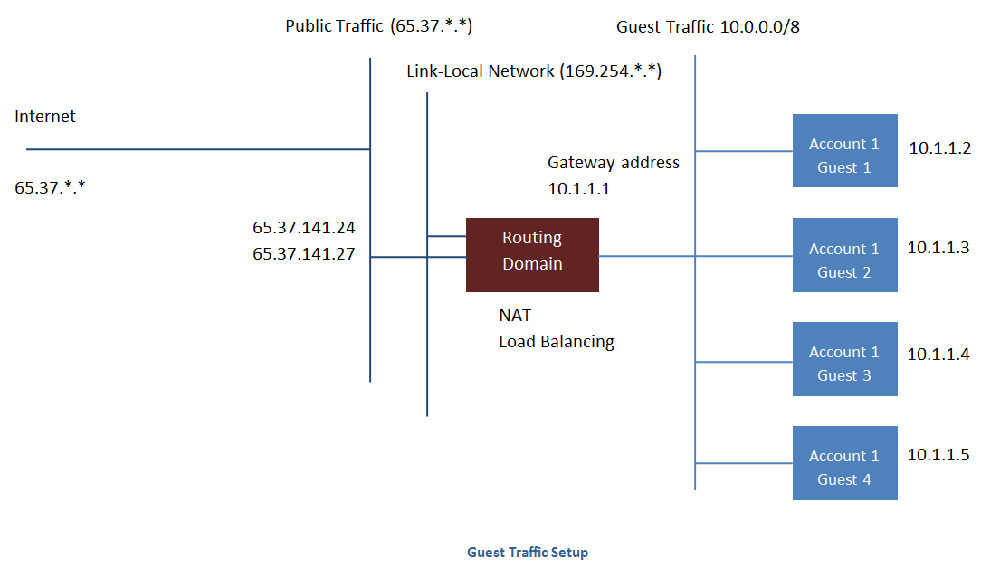
Typically, the 管理服务 automatically creates a virtual router for each network. A virtual router is a special virtual machine that runs on the hosts. Each virtual router in an isolated network has three network interfaces. If multiple public VLAN is used, the router will have multiple public interfaces. Its eth0 interface serves as the gateway for the guest traffic and has the IP address of 10.1.1.1. Its eth1 interface is used by the system to configure the virtual router. Its eth2 interface is assigned a public IP address for public traffic. If multiple public VLAN is used, the router will have multiple public interfaces.
The virtual router provides DHCP and will automatically assign an IP address for each guest VM within the IP range assigned for the network. The user can manually reconfigure guest VMs to assume different IP addresses.
Source NAT is automatically configured in the virtual router to forward outbound traffic for all guest VMs
Networking in a Pod¶
The figure below illustrates 网络配置 within a single pod. The hosts are connected to a pod-level switch. At a minimum, the hosts should have one physical uplink to each switch. Bonded NICs are supported as well. The pod-level switch is a pair of redundant gigabit switches with 10 G uplinks.
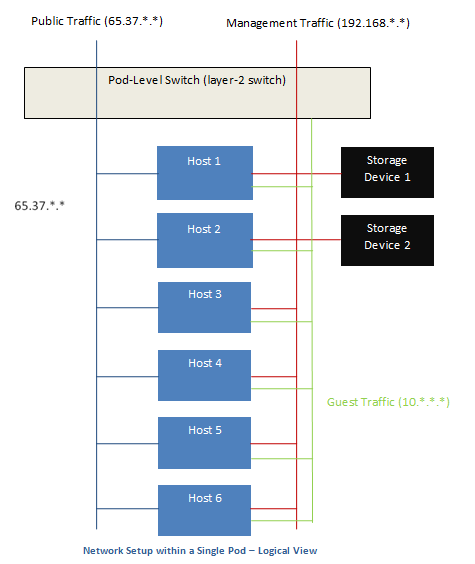
Servers are connected as follows:
- Storage devices are connected to only the network that carries management traffic.
- Hosts are connected to networks for both management traffic and public traffic.
- Hosts are also connected to one or more networks carrying guest traffic.
We recommend the use of multiple physical Ethernet cards to implement each network interface as well as redundant switch fabric in order to maximize throughput and improve reliability.
Networking in a Zone¶
The following figure illustrates the 网络配置 within a single zone.

A firewall for management traffic operates in the NAT mode. The network typically is assigned IP addresses in the 192.168.0.0/16 Class B private address space. Each pod is assigned IP addresses in the 192.168.*.0/24 Class C private address space.
Each zone has its own set of public IP addresses. Public IP addresses from different zones do not overlap.
Basic Zone Physical Network Configuration¶
In a basic network, configuring the physical network is fairly straightforward. You only need to configure one guest network to carry traffic that is generated by guest VMs. When you first add a zone to CloudStack, you set up the guest network through the Add Zone screens.
Advanced Zone Physical Network Configuration¶
Within a zone that uses advanced networking, you need to tell the 管理服务 how the physical network is set up to carry different kinds of traffic in isolation.
Configure Guest Traffic in an Advanced Zone¶
These steps assume you have already logged in to the CloudStack UI. To configure the base guest network:
In the left navigation, choose Infrastructure. On Zones, click View More, then click the zone to which you want to add a network.
Click the Network tab.
Click Add guest network.
The Add guest network window is displayed:
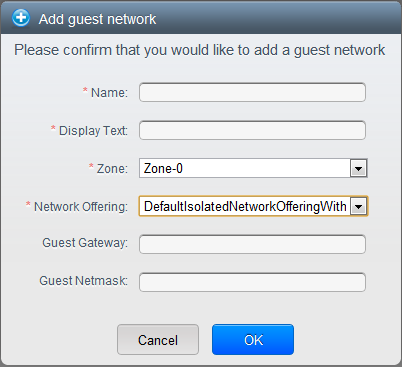
Provide the following information:
- Name: The name of the network. This will be user-visible
- Display Text: The description of the network. This will be user-visible
- Zone: The zone in which you are configuring the guest network.
- Network offering: If the administrator has configured multiple network offerings, select the one you want to use for this network
- Guest Gateway: The gateway that the guests should use
- Guest Netmask: The netmask in use on the subnet the guests will use
Click OK.
Configure Public Traffic in an Advanced Zone¶
In a zone that uses advanced networking, you need to configure at least one range of IP addresses for Internet traffic.
Using Multiple Guest Networks¶
In zones that use advanced networking, additional networks for guest traffic may be added at any time after the initial installation. You can also customize the domain name associated with the network by specifying a DNS suffix for each network.
A VM’s networks are defined at VM creation time. A VM cannot add or remove networks after it has been created, although the user can go into the guest and remove the IP address from the NIC on a particular network.
Each VM has just one default network. The virtual router’s DHCP reply will set the guest’s default gateway as that for the default network. Multiple non-default networks may be added to a guest in addition to the single, required default network. The administrator can control which networks are available as the default network.
Additional networks can either be available to all accounts or be assigned to a specific account. Networks that are available to all accounts are zone-wide. Any user with access to the zone can create a VM with access to that network. These zone-wide networks provide little or no isolation between guests.Networks that are assigned to a specific account provide strong isolation.
Adding an Additional Guest Network¶
- Log in to the CloudStack UI as an administrator or end user.
- In the left navigation, choose Network.
- Click Add guest network. Provide the following information:
- Name: The name of the network. This will be user-visible.
- Display Text: The description of the network. This will be user-visible.
- Zone. The name of the zone this network applies to. Each zone is a broadcast domain, and therefore each zone has a different IP range for the guest network. The administrator must configure the IP range for each zone.
- Network offering: If the administrator has configured multiple network offerings, select the one you want to use for this network.
- Guest Gateway: The gateway that the guests should use.
- Guest Netmask: The netmask in use on the subnet the guests will use.
- Click Create.
Reconfiguring Networks in VMs¶
CloudStack provides you the ability to move VMs between networks and reconfigure a VM’s network. You can remove a VM from a network and add to a new network. You can also change the default network of a virtual machine. With this functionality, hybrid or traditional server loads can be accommodated with ease.
This feature is supported on XenServer, VMware, and KVM hypervisors.
前提¶
Ensure that vm-tools are running on guest VMs for adding or removing networks to work on VMware hypervisor.
Adding a Network¶
Log in to the CloudStack UI as an administrator or end user.
In the left navigation, click Instances.
Choose the VM that you want to work with.
Click the NICs tab.
Click Add network to VM.
The Add network to VM dialog is displayed.
In the drop-down list, select the network that you would like to add this VM to.
A new NIC is added for this network. You can view the following details in the NICs page:
- ID
- Network Name
- Type
- IP Address
- Gateway
- Netmask
- Is default
- CIDR (for IPv6)
Removing a Network¶
- Log in to the CloudStack UI as an administrator or end user.
- In the left navigation, click Instances.
- Choose the VM that you want to work with.
- Click the NICs tab.
- Locate the NIC you want to remove.
- Click Remove NIC button.

- Click Yes to confirm.
Selecting the Default Network¶
- Log in to the CloudStack UI as an administrator or end user.
- In the left navigation, click Instances.
- Choose the VM that you want to work with.
- Click the NICs tab.
- Locate the NIC you want to work with.
- Click the Set default NIC button. .
- Click Yes to confirm.
Changing the Network Offering on a Guest Network¶
A user or administrator can change the network offering that is associated with an existing guest network.
Log in to the CloudStack UI as an administrator or end user.
If you are changing from a network offering that uses the CloudStack virtual router to one that uses external devices as network service providers, you must first stop all the VMs on the network.
In the left navigation, choose Network.
Click the name of the network you want to modify.
In the Details tab, click Edit.

In Network Offering, choose the new network offering, then click Apply.
A prompt is displayed asking whether you want to keep the existing CIDR. This is to let you know that if you change the network offering, the CIDR will be affected.
If you upgrade between virtual router as a provider and an external network device as provider, acknowledge the change of CIDR to continue, so choose Yes.
Wait for the update to complete. Don’t try to restart VMs until the network change is complete.
If you stopped any VMs, restart them.
IP Reservation in Isolated Guest Networks¶
In isolated guest networks, a part of the guest IP address space can be reserved for non-CloudStack VMs or physical servers. To do so, you configure a range of Reserved IP addresses by specifying the CIDR when a guest network is in Implemented state. If your customers wish to have non-CloudStack controlled VMs or physical servers on the same network, they can share a part of the IP address space that is primarily provided to the guest network.
In an Advanced zone, an IP address range or a CIDR is assigned to a network when the network is defined. The CloudStack virtual router acts as the DHCP server and uses CIDR for assigning IP addresses to the guest VMs. If you decide to reserve CIDR for non-CloudStack purposes, you can specify a part of the IP address range or the CIDR that should only be allocated by the DHCP service of the virtual router to the guest VMs created in CloudStack. The remaining IPs in that network are called Reserved IP Range. When IP reservation is configured, the administrator can add additional VMs or physical servers that are not part of CloudStack to the same network and assign them the Reserved IP addresses. CloudStack guest VMs cannot acquire IPs from the Reserved IP Range.
IP Reservation Considerations¶
Consider the following before you reserve an IP range for non-CloudStack machines:
IP Reservation is supported only in Isolated networks.
IP Reservation can be applied only when the network is in Implemented state.
No IP Reservation is done by default.
Guest VM CIDR you specify must be a subset of the network CIDR.
Specify a valid Guest VM CIDR. IP Reservation is applied only if no active IPs exist outside the Guest VM CIDR.
You cannot apply IP Reservation if any VM is alloted with an IP address that is outside the Guest VM CIDR.
To reset an existing IP Reservation, apply IP reservation by specifying the value of network CIDR in the CIDR field.
For example, the following table describes three scenarios of guest network creation:
Case CIDR Network CIDR Reserved IP Range for Non-CloudStack VMs Description 1 10.1.1.0/24 None None No IP Reservation. 2 10.1.1.0/26 10.1.1.0/24 10.1.1.64 to 10.1.1.254 IP Reservation configured by the UpdateNetwork API with guestvmcidr=10.1.1.0/26 or enter 10.1.1.0/26 in the CIDR field in the UI. 3 10.1.1.0/24 None None Removing IP Reservation by the UpdateNetwork API with guestvmcidr=10.1.1.0/24 or enter 10.1.1.0/24 in the CIDR field in the UI.
Limitations¶
- The IP Reservation is not supported if active IPs that are found outside the Guest VM CIDR.
- Upgrading network offering which causes a change in CIDR (such as upgrading an offering with no external devices to one with external devices) IP Reservation becomes void if any. Reconfigure IP Reservation in the new re-implemeted network.
最佳实践¶
Apply IP Reservation to the guest network as soon as the network state changes to Implemented. If you apply reservation soon after the first guest VM is deployed, lesser conflicts occurs while applying reservation.
Reserving an IP Range¶
Log in to the CloudStack UI as an administrator or end user.
In the left navigation, choose Network.
Click the name of the network you want to modify.
In the Details tab, click Edit.
The CIDR field changes to editable one.
In CIDR, specify the Guest VM CIDR.
Click Apply.
Wait for the update to complete. The Network CIDR and the Reserved IP Range are displayed on the Details page.
Reserving Public IP Addresses and VLANs for Accounts¶
CloudStack provides you the ability to reserve a set of public IP addresses and VLANs exclusively for an account. During zone creation, you can continue defining a set of VLANs and multiple public IP ranges. This feature extends the functionality to enable you to dedicate a fixed set of VLANs and guest IP addresses for a tenant.
Note that if an account has consumed all the VLANs and IPs dedicated to it, the account can acquire two more resources from the system. CloudStack provides the root admin with two configuration parameter to modify this default behavior: use.system.public.ips and use.system.guest.vlans. These global parameters enable the root admin to disallow an account from acquiring public IPs and guest VLANs from the system, if the account has dedicated resources and these dedicated resources have all been consumed. Both these configurations are configurable at the account level.
This feature provides you the following capabilities:
Reserve a VLAN range and public IP address range from an Advanced zone and assign it to an account
Disassociate a VLAN and public IP address range from an account
View the number of public IP addresses allocated to an account
Check whether the required range is available and is conforms to account limits.
The maximum IPs per account limit cannot be superseded.
Dedicating IP Address Ranges to an Account¶
Log in to the CloudStack UI as administrator.
In the left navigation bar, click Infrastructure.
In Zones, click View All.
Choose the zone you want to work with.
Click the Physical Network tab.
In the Public node of the diagram, click Configure.
Click the IP Ranges tab.
You can either assign an existing IP range to an account, or create a new IP range and assign to an account.
To assign an existing IP range to an account, perform the following:
Locate the IP range you want to work with.
Click Add Account button.
The Add Account dialog is displayed.
Specify the following:
- Account: The account to which you want to assign the IP address range.
- Domain: The domain associated with the account.
To create a new IP range and assign an account, perform the following:
Specify the following:
Gateway
Netmask
VLAN
Start IP
End IP
Account: Perform the following:
Click Account.
The Add Account page is displayed.
Specify the following:
- Account: The account to which you want to assign an IP address range.
- Domain: The domain associated with the account.
Click OK.
Click Add.
Dedicating VLAN Ranges to an Account¶
After the CloudStack 管理服务 is installed, log in to the CloudStack UI as administrator.
In the left navigation bar, click Infrastructure.
In Zones, click View All.
Choose the zone you want to work with.
Click the Physical Network tab.
In the Guest node of the diagram, click Configure.
Select the Dedicated VLAN Ranges tab.
Click Dedicate VLAN Range.
The Dedicate VLAN Range dialog is displayed.
Specify the following:
- VLAN Range: The VLAN range that you want to assign to an account.
- Account: The account to which you want to assign the selected VLAN range.
- Domain: The domain associated with the account.
Configuring Multiple IP Addresses on a Single NIC¶
CloudStack provides you the ability to associate multiple private IP addresses per guest VM NIC. In addition to the primary IP, you can assign additional IPs to the guest VM NIC. This feature is supported on all the network configurations: Basic, Advanced, and VPC. 安全 Groups, Static NAT and Port forwarding services are supported on these additional IPs.
As always, you can specify an IP from the guest subnet; if not specified, an IP is automatically picked up from the guest VM subnet. You can view the IPs associated with for each guest VM NICs on the UI. You can apply NAT on these additional guest IPs by using network configuration option in the CloudStack UI. You must specify the NIC to which the IP should be associated.
This feature is supported on XenServer, KVM, and VMware hypervisors. Note that Basic zone security groups are not supported on VMware.
Use Cases¶
Some of the use cases are described below:
- Network devices, such as firewalls and load balancers, generally work best when they have access to multiple IP addresses on the network interface.
- Moving private IP addresses between interfaces or instances. Applications that are bound to specific IP addresses can be moved between instances.
- Hosting multiple SSL Websites on a single instance. You can install multiple SSL certificates on a single instance, each associated with a distinct IP address.
Guidelines¶
To prevent IP conflict, configure different subnets when multiple networks are connected to the same VM.
Assigning Additional IPs to a VM¶
Log in to the CloudStack UI.
In the left navigation bar, click Instances.
Click the name of the instance you want to work with.
In the Details tab, click NICs.
Click View Secondary IPs.
Click Acquire New Secondary IP, and click Yes in the confirmation dialog.
You need to configure the IP on the guest VM NIC manually. CloudStack will not automatically configure the acquired IP address on the VM. Ensure that the IP address configuration persist on VM reboot.
Within a few moments, the new IP address should appear with the state Allocated. You can now use the IP address in Port Forwarding or StaticNAT rules.
Port Forwarding and StaticNAT Services Changes¶
Because multiple IPs can be associated per NIC, you are allowed to select a desired IP for the Port Forwarding and StaticNAT services. The default is the primary IP. To enable this functionality, an extra optional parameter ‘vmguestip’ is added to the Port forwarding and StaticNAT APIs (enableStaticNat, createIpForwardingRule) to indicate on what IP address NAT need to be configured. If vmguestip is passed, NAT is configured on the specified private IP of the VM. if not passed, NAT is configured on the primary IP of the VM.
About Multiple IP Ranges¶
Note
The feature can only be implemented on IPv4 addresses.
CloudStack provides you with the flexibility to add guest IP ranges from
different subnets in Basic zones and security groups-enabled Advanced
zones. For security groups-enabled Advanced zones, it implies multiple
subnets can be added to the same VLAN. With the addition of this
feature, you will be able to add IP address ranges from the same subnet
or from a different one when IP address are exhausted. This would in
turn allows you to employ higher number of subnets and thus reduce the
address management overhead. To support this feature, the capability of
createVlanIpRange API is extended to add IP ranges also from a
different subnet.
Ensure that you manually configure the gateway of the new subnet before adding the IP range. Note that CloudStack supports only one gateway for a subnet; overlapping subnets are not currently supported.
Use the deleteVlanRange API to delete IP ranges. This operation
fails if an IP from the remove range is in use. If the remove range
contains the IP address on which the DHCP server is running, CloudStack
acquires a new IP from the same subnet. If no IP is available in the
subnet, the remove operation fails.
This feature is supported on KVM, xenServer, and VMware hypervisors.
About Elastic IPs¶
Elastic IP (EIP) addresses are the IP addresses that are associated with an account, and act as static IP addresses. The account owner has the complete control over the Elastic IP addresses that belong to the account. As an account owner, you can allocate an Elastic IP to a VM of your choice from the EIP pool of your account. Later if required you can reassign the IP address to a different VM. This feature is extremely helpful during VM failure. Instead of replacing the VM which is down, the IP address can be reassigned to a new VM in your account.
Similar to the public IP address, Elastic IP addresses are mapped to their associated private IP addresses by using StaticNAT. The EIP service is equipped with StaticNAT (1:1) service in an EIP-enabled basic zone. The default network offering, DefaultSharedNetscalerEIPandELBNetworkOffering, provides your network with EIP and ELB network services if a NetScaler device is deployed in your zone. Consider the following illustration for more details.
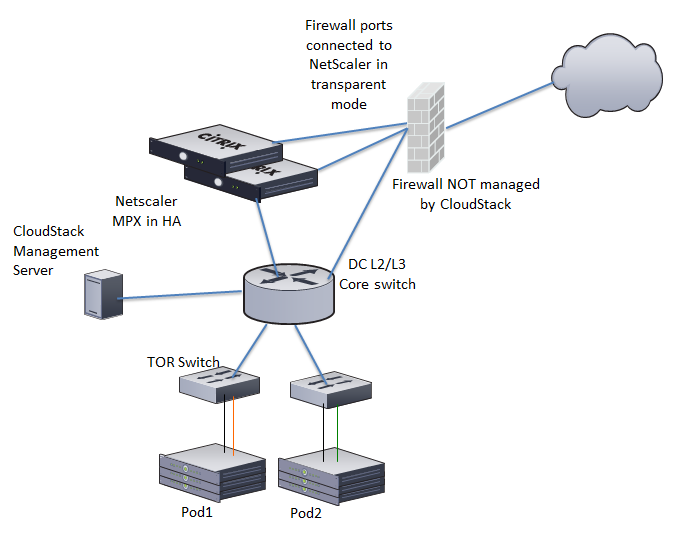
In the illustration, a NetScaler appliance is the default entry or exit point for the CloudStack instances, and firewall is the default entry or exit point for the rest of the data center. Netscaler provides LB services and staticNAT service to the guest networks. The guest traffic in the pods and the 管理服务 are on different subnets / VLANs. The policy-based routing in the data center core switch sends the public traffic through the NetScaler, whereas the rest of the data center goes through the firewall.
The EIP work flow is as follows:
When a user VM is deployed, a public IP is automatically acquired from the pool of public IPs configured in the zone. This IP is owned by the VM’s account.
Each VM will have its own private IP. When the user VM starts, Static NAT is provisioned on the NetScaler device by using the Inbound Network Address Translation (INAT) and Reverse NAT (RNAT) rules between the public IP and the private IP.
Note
Inbound NAT (INAT) is a type of NAT supported by NetScaler, in which the destination IP address is replaced in the packets from the public network, such as the Internet, with the private IP address of a VM in the private network. Reverse NAT (RNAT) is a type of NAT supported by NetScaler, in which the source IP address is replaced in the packets generated by a VM in the private network with the public IP address.
This default public IP will be released in two cases:
- When the VM is stopped. When the VM starts, it again receives a new public IP, not necessarily the same one allocated initially, from the pool of Public IPs.
- The user acquires a public IP (Elastic IP). This public IP is associated with the account, but will not be mapped to any private IP. However, the user can enable Static NAT to associate this IP to the private IP of a VM in the account. The Static NAT rule for the public IP can be disabled at any time. When Static NAT is disabled, a new public IP is allocated from the pool, which is not necessarily be the same one allocated initially.
For the deployments where public IPs are limited resources, you have the flexibility to choose not to allocate a public IP by default. You can use the Associate Public IP option to turn on or off the automatic public IP assignment in the EIP-enabled Basic zones. If you turn off the automatic public IP assignment while creating a network offering, only a private IP is assigned to a VM when the VM is deployed with that network offering. Later, the user can acquire an IP for the VM and enable static NAT.
For more information on the Associate Public IP option, see “Creating a New Network Offering”.
Note
The Associate Public IP feature is designed only for use with user VMs. The System VMs continue to get both public IP and private by default, irrespective of the network offering configuration.
New deployments which use the default shared network offering with EIP and ELB services to create a shared network in the Basic zone will continue allocating public IPs to each user VM.
Portable IPs¶
About Portable IP¶
Portable IPs in CloudStack are region-level pool of IPs, which are elastic in nature, that can be transferred across geographically separated zones. As an administrator, you can provision a pool of portable public IPs at region level and are available for user consumption. The users can acquire portable IPs if admin has provisioned portable IPs at the region level they are part of. These IPs can be use for any service within an advanced zone. You can also use portable IPs for EIP services in basic zones.
The salient features of Portable IP are as follows:
- IP is statically allocated
- IP need not be associated with a network
- IP association is transferable across networks
- IP is transferable across both Basic and Advanced zones
- IP is transferable across VPC, non-VPC isolated and shared networks
- Portable IP transfer is available only for static NAT.
Guidelines¶
Before transferring to another network, ensure that no network rules (Firewall, Static NAT, Port Forwarding, and so on) exist on that portable IP.
Configuring Portable IPs¶
Log in to the CloudStack UI as an administrator or end user.
In the left navigation, click Regions.
Choose the Regions that you want to work with.
Click View Portable IP.
Click Portable IP Range.
The Add Portable IP Range window is displayed.
Specify the following:
- Start IP/ End IP: A range of IP addresses that are accessible from the Internet and will be allocated to guest VMs. Enter the first and last IP addresses that define a range that CloudStack can assign to guest VMs.
- Gateway: The gateway in use for the Portable IP addresses you are configuring.
- Netmask: The netmask associated with the Portable IP range.
- VLAN: The VLAN that will be used for public traffic.
Click OK.
Acquiring a Portable IP¶
Log in to the CloudStack UI as an administrator or end user.
In the left navigation, choose Network.
Click the name of the network where you want to work with.
Click View IP Addresses.
Click Acquire New IP.
The Acquire New IP window is displayed.
Specify whether you want cross-zone IP or not.
Click Yes in the confirmation dialog.
Within a few moments, the new IP address should appear with the state Allocated. You can now use the IP address in port forwarding or static NAT rules.
Transferring Portable IP¶
An IP can be transferred from one network to another only if Static NAT is enabled. However, when a portable IP is associated with a network, you can use it for any service in the network.
To transfer a portable IP across the networks, execute the following API:
http://localhost:8096/client/api?command=enableStaticNat&response=json&ipaddressid=a4bc37b2-4b4e-461d-9a62-b66414618e36&virtualmachineid=a242c476-ef37-441e-9c7b-b303e2a9cb4f&networkid=6e7cd8d1-d1ba-4c35-bdaf-333354cbd49810
Replace the UUID with appropriate UUID. For example, if you want to transfer a portable IP to network X and VM Y in a network, execute the following:
http://localhost:8096/client/api?command=enableStaticNat&response=json&ipaddressid=a4bc37b2-4b4e-461d-9a62-b66414618e36&virtualmachineid=Y&networkid=X
Isolation in Advanced Zone Using Private VLAN¶
Isolation of guest traffic in shared networks can be achieved by using Private VLANs (PVLAN). PVLANs provide Layer 2 isolation between ports within the same VLAN. In a PVLAN-enabled shared network, a user VM cannot reach other user VM though they can reach the DHCP server and gateway, this would in turn allow users to control traffic within a network and help them deploy multiple applications without communication between application as well as prevent communication with other users’ VMs.
- Isolate VMs in a shared networks by using Private VLANs.
- Supported on KVM, XenServer, and VMware hypervisors
- PVLAN-enabled shared network can be a part of multiple networks of a guest VM.
About Private VLAN¶
In an Ethernet switch, a VLAN is a broadcast domain where hosts can establish direct communication with each another at Layer 2. Private VLAN is designed as an extension of VLAN standard to add further segmentation of the logical broadcast domain. A regular VLAN is a single broadcast domain, whereas a private VLAN partitions a larger VLAN broadcast domain into smaller sub-domains. A sub-domain is represented by a pair of VLANs: a Primary VLAN and a Secondary VLAN. The original VLAN that is being divided into smaller groups is called Primary, which implies that all VLAN pairs in a private VLAN share the same Primary VLAN. All the secondary VLANs exist only inside the Primary. Each Secondary VLAN has a specific VLAN ID associated to it, which differentiates one sub-domain from another.
Three types of ports exist in a private VLAN domain, which essentially determine the behaviour of the participating hosts. Each ports will have its own unique set of rules, which regulate a connected host’s ability to communicate with other connected host within the same private VLAN domain. Configure each host that is part of a PVLAN pair can be by using one of these three port designation:
- Promiscuous: A promiscuous port can communicate with all the interfaces, including the community and isolated host ports that belong to the secondary VLANs. In Promiscuous mode, hosts are connected to promiscuous ports and are able to communicate directly with resources on both primary and secondary VLAN. Routers, DHCP servers, and other trusted devices are typically attached to promiscuous ports.
- Isolated VLANs: The ports within an isolated VLAN cannot communicate with each other at the layer-2 level. The hosts that are connected to Isolated ports can directly communicate only with the Promiscuous resources. If your customer device needs to have access only to a gateway router, attach it to an isolated port.
- Community VLANs: The ports within a community VLAN can communicate with each other and with the promiscuous ports, but they cannot communicate with the ports in other communities at the layer-2 level. In a Community mode, direct communication is permitted only with the hosts in the same community and those that are connected to the Primary PVLAN in promiscuous mode. If your customer has two devices that need to be isolated from other customers’ devices, but to be able to communicate among themselves, deploy them in community ports.
For further reading:
前提¶
Use a PVLAN supported switch.
See Private VLAN Catalyst Switch Support Matrix for more information.
All the layer 2 switches, which are PVLAN-aware, are connected to each other, and one of them is connected to a router. All the ports connected to the host would be configured in trunk mode. Open Management VLAN, Primary VLAN (public) and Secondary Isolated VLAN ports. Configure the switch port connected to the router in PVLAN promiscuous trunk mode, which would translate an isolated VLAN to primary VLAN for the PVLAN-unaware router.
Note that only Cisco Catalyst 4500 has the PVLAN promiscuous trunk mode to connect both normal VLAN and PVLAN to a PVLAN-unaware switch. For the other Catalyst PVLAN support switch, connect the switch to upper switch by using cables, one each for a PVLAN pair.
Configure private VLAN on your physical switches out-of-band.
Before you use PVLAN on XenServer and KVM, enable Open vSwitch (OVS).
Note
OVS on XenServer and KVM does not support PVLAN natively. Therefore, CloudStack managed to simulate PVLAN on OVS for XenServer and KVM by modifying the flow table.
Creating a PVLAN-Enabled Guest Network¶
Log in to the CloudStack UI as administrator.
In the left navigation, choose Infrastructure.
On Zones, click View More.
Click the zone to which you want to add a guest network.
Click the Physical Network tab.
Click the physical network you want to work with.
On the Guest node of the diagram, click Configure.
Click the Network tab.
Click Add guest network.
The Add guest network window is displayed.
Specify the following:
Name: The name of the network. This will be visible to the user.
Description: The short description of the network that can be displayed to users.
VLAN ID: The unique ID of the VLAN.
Secondary Isolated VLAN ID: The unique ID of the Secondary Isolated VLAN.
For the description on Secondary Isolated VLAN, see About Private VLAN”.
Scope: The available scopes are Domain, Account, Project, and All.
- Domain: Selecting Domain limits the scope of this guest network to the domain you specify. The network will not be available for other domains. If you select Subdomain Access, the guest network is available to all the sub domains within the selected domain.
- Account: The account for which the guest network is being created for. You must specify the domain the account belongs to.
- Project: The project for which the guest network is being created for. You must specify the domain the project belongs to.
- All: The guest network is available for all the domains, account, projects within the selected zone.
Network Offering: If the administrator has configured multiple network offerings, select the one you want to use for this network.
Gateway: The gateway that the guests should use.
Netmask: The netmask in use on the subnet the guests will use.
IP Range: A range of IP addresses that are accessible from the Internet and are assigned to the guest VMs.
Network Domain: A custom DNS suffix at the level of a network. If you want to assign a special domain name to the guest VM network, specify a DNS suffix.
Click OK to confirm.
安全组¶
About 安全组¶
安全 groups provide a way to isolate traffic to VMs. A security group is a group of VMs that filter their incoming and outgoing traffic according to a set of rules, called ingress and egress rules. These rules filter network traffic according to the IP address that is attempting to communicate with the VM. 安全 groups are particularly useful in zones that use basic networking, because there is a single guest network for all guest VMs. In advanced zones, security groups are supported only on the KVM hypervisor.
Note
In a zone that uses advanced networking, you can instead define multiple guest networks to isolate traffic to VMs.
Each CloudStack account comes with a default security group that denies all inbound traffic and allows all outbound traffic. The default security group can be modified so that all new VMs inherit some other desired set of rules.
Any CloudStack user can set up any number of additional security groups. When a new VM is launched, it is assigned to the default security group unless another user-defined security group is specified. A VM can be a member of any number of security groups. Once a VM is assigned to a security group, it remains in that group for its entire lifetime; you can not move a running VM from one security group to another.
You can modify a security group by deleting or adding any number of ingress and egress rules. When you do, the new rules apply to all VMs in the group, whether running or stopped.
If no ingress rules are specified, then no traffic will be allowed in, except for responses to any traffic that has been allowed out through an egress rule.
Adding a 安全 Group¶
A user or administrator can define a new security group.
Log in to the CloudStack UI as an administrator or end user.
In the left navigation, choose Network.
In Select view, choose 安全组.
Click Add 安全 Group.
Provide a name and description.
Click OK.
The new security group appears in the 安全组 Details tab.
To make the security group useful, continue to Adding Ingress and Egress Rules to a 安全 Group.
安全组 in Advanced Zones (KVM Only)¶
CloudStack provides the ability to use security groups to provide isolation between guests on a single shared, zone-wide network in an advanced zone where KVM is the hypervisor. Using security groups in advanced zones rather than multiple VLANs allows a greater range of options for setting up guest isolation in a cloud.
Limitations¶
The following are not supported for this feature:
- Two IP ranges with the same VLAN and different gateway or netmask in security group-enabled shared network.
- Two IP ranges with the same VLAN and different gateway or netmask in account-specific shared networks.
- Multiple VLAN ranges in security group-enabled shared network.
- Multiple VLAN ranges in account-specific shared networks.
安全 groups must be enabled in the zone in order for this feature to be used.
Enabling 安全组¶
In order for security groups to function in a zone, the security groups feature must first be enabled for the zone. The administrator can do this when creating a new zone, by selecting a network offering that includes security groups. The procedure is described in Basic Zone Configuration in the Advanced 安装指南. The administrator can not enable security groups for an existing zone, only when creating a new zone.
Adding Ingress and Egress Rules to a 安全 Group¶
Log in to the CloudStack UI as an administrator or end user.
In the left navigation, choose Network
In Select view, choose 安全组, then click the security group you want.
To add an ingress rule, click the Ingress Rules tab and fill out the following fields to specify what network traffic is allowed into VM instances in this security group. If no ingress rules are specified, then no traffic will be allowed in, except for responses to any traffic that has been allowed out through an egress rule.
- Add by CIDR/Account. Indicate whether the source of the traffic will be defined by IP address (CIDR) or an existing security group in a CloudStack account (Account). Choose Account if you want to allow incoming traffic from all VMs in another security group
- Protocol. The networking protocol that sources will use to send traffic to the security group. TCP and UDP are typically used for data exchange and end-user communications. ICMP is typically used to send error messages or network monitoring data.
- Start Port, End Port. (TCP, UDP only) A range of listening ports that are the destination for the incoming traffic. If you are opening a single port, use the same number in both fields.
- ICMP Type, ICMP Code. (ICMP only) The type of message and error code that will be accepted.
- CIDR. (Add by CIDR only) To accept only traffic from IP addresses within a particular address block, enter a CIDR or a comma-separated list of CIDRs. The CIDR is the base IP address of the incoming traffic. For example, 192.168.0.0/22. To allow all CIDRs, set to 0.0.0.0/0.
- Account, 安全 Group. (Add by Account only) To accept only traffic from another security group, enter the CloudStack account and name of a security group that has already been defined in that account. To allow traffic between VMs within the security group you are editing now, enter the same name you used in step 7.
The following example allows inbound HTTP access from anywhere:
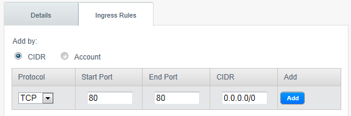
To add an egress rule, click the Egress Rules tab and fill out the following fields to specify what type of traffic is allowed to be sent out of VM instances in this security group. If no egress rules are specified, then all traffic will be allowed out. Once egress rules are specified, the following types of traffic are allowed out: traffic specified in egress rules; queries to DNS 和 DHCP servers; and responses to any traffic that has been allowed in through an ingress rule
- Add by CIDR/Account. Indicate whether the destination of the traffic will be defined by IP address (CIDR) or an existing security group in a CloudStack account (Account). Choose Account if you want to allow outgoing traffic to all VMs in another security group.
- Protocol. The networking protocol that VMs will use to send outgoing traffic. TCP and UDP are typically used for data exchange and end-user communications. ICMP is typically used to send error messages or network monitoring data.
- Start Port, End Port. (TCP, UDP only) A range of listening ports that are the destination for the outgoing traffic. If you are opening a single port, use the same number in both fields.
- ICMP Type, ICMP Code. (ICMP only) The type of message and error code that will be sent
- CIDR. (Add by CIDR only) To send traffic only to IP addresses within a particular address block, enter a CIDR or a comma-separated list of CIDRs. The CIDR is the base IP address of the destination. For example, 192.168.0.0/22. To allow all CIDRs, set to 0.0.0.0/0.
- Account, 安全 Group. (Add by Account only) To allow traffic to be sent to another security group, enter the CloudStack account and name of a security group that has already been defined in that account. To allow traffic between VMs within the security group you are editing now, enter its name.
Click Add.
External Firewalls and Load Balancers¶
CloudStack is capable of replacing its 虚拟路由器 with an external Juniper SRX device and an optional external NetScaler or F5 load balancer for gateway and load balancing services. In this case, the VMs use the SRX as their gateway.
About Using a NetScaler Load Balancer¶
Citrix NetScaler is supported as an external network element for load balancing in zones that use isolated networking in advanced zones. Set up an external load balancer when you want to provide load balancing through means other than CloudStack’s provided virtual router.
Note
In a Basic zone, load balancing service is supported only if Elastic IP or Elastic LB services are enabled.
When NetScaler load balancer is used to provide EIP or ELB services in a Basic zone, ensure that all guest VM traffic must enter and exit through the NetScaler device. When inbound traffic goes through the NetScaler device, traffic is routed by using the NAT protocol depending on the EIP/ELB configured on the public IP to the private IP. The traffic that is originated from the guest VMs usually goes through the layer 3 router. To ensure that outbound traffic goes through NetScaler device providing EIP/ELB, layer 3 router must have a policy-based routing. A policy-based route must be set up so that all traffic originated from the guest VM’s are directed to NetScaler device. This is required to ensure that the outbound traffic from the guest VM’s is routed to a public IP by using NAT.For more information on Elastic IP, see “About Elastic IP”.
The NetScaler can be set up in direct (outside the firewall) mode. It must be added before any load balancing rules are deployed on guest VMs in the zone.
The functional behavior of the NetScaler with CloudStack is the same as described in the CloudStack documentation for using an F5 external load balancer. The only exception is that the F5 supports routing domains, and NetScaler does not. NetScaler can not yet be used as a firewall.
To install and enable an external load balancer for CloudStack management, see External Guest Load Balancer Integration in the 安装指南.
The Citrix NetScaler comes in three varieties. The following summarizes how these variants are treated in CloudStack.
MPX
- Physical appliance. Capable of deep packet inspection. Can act as application firewall and load balancer
- In advanced zones, load balancer functionality fully supported without limitation. In basic zones, static NAT, elastic IP (EIP), and elastic load balancing (ELB) are also provided.
VPX
- Virtual appliance. Can run as VM on XenServer, ESXi, and Hyper-V hypervisors. Same functionality as MPX
- Supported on ESXi and XenServer. Same functional support as for MPX. CloudStack will treat VPX and MPX as the same device type.
SDX
- Physical appliance. Can create multiple fully isolated VPX instances on a single appliance to support multi-tenant usage
- CloudStack will dynamically provision, configure, and manage the life cycle of VPX instances on the SDX. Provisioned instances are added into CloudStack automatically - no manual configuration by the administrator is required. Once a VPX instance is added into CloudStack, it is treated the same as a VPX on an ESXi host.
Configuring SNMP Community String on a RHEL Server¶
The SNMP Community string is similar to a user id or password that provides access to a network device, such as router. This string is sent along with all SNMP requests. If the community string is correct, the device responds with the requested information. If the community string is incorrect, the device discards the request and does not respond.
The NetScaler device uses SNMP to communicate with the VMs. You must install SNMP and configure SNMP Community string for a secure communication between the NetScaler device and the RHEL machine.
Ensure that you installed SNMP on RedHat. If not, run the following command:
yum install net-snmp-utils
Edit the /etc/snmp/snmpd.conf file to allow the SNMP polling from the NetScaler device.
Map the community name into a security name (local and mynetwork, depending on where the request is coming from):
Note
Use a strong password instead of public when you edit the following table.
# sec.name source community com2sec local localhost public com2sec mynetwork 0.0.0.0 public
Note
Setting to 0.0.0.0 allows all IPs to poll the NetScaler server.
Map the security names into group names:
# group.name sec.model sec.name group MyRWGroup v1 local group MyRWGroup v2c local group MyROGroup v1 mynetwork group MyROGroup v2c mynetwork
Create a view to allow the groups to have the permission to:
incl/excl subtree mask view all included .1
Grant access with different write permissions to the two groups to the view you created.
# context sec.model sec.level prefix read write notif access MyROGroup "" any noauth exact all none none access MyRWGroup "" any noauth exact all all all
Unblock SNMP in iptables.
iptables -A INPUT -p udp --dport 161 -j ACCEPT
Start the SNMP service:
service snmpd start
Ensure that the SNMP service is started automatically during the system startup:
chkconfig snmpd on
Initial Setup of External Firewalls and Load Balancers¶
When the first VM is created for a new account, CloudStack programs the external firewall and load balancer to work with the VM. The following objects are created on the firewall:
- A new logical interface to connect to the account’s private VLAN. The interface IP is always the first IP of the account’s private subnet (e.g. 10.1.1.1).
- A source NAT rule that forwards all outgoing traffic from the account’s private VLAN to the public Internet, using the account’s public IP address as the source address
- A firewall filter counter that measures the number of bytes of outgoing traffic for the account
The following objects are created on the load balancer:
- A new VLAN that matches the account’s provisioned Zone VLAN
- A self IP for the VLAN. This is always the second IP of the account’s private subnet (e.g. 10.1.1.2).
Ongoing Configuration of External Firewalls and Load Balancers¶
Additional user actions (e.g. setting a port forward) will cause further programming of the firewall and load balancer. A user may request additional public IP addresses and forward traffic received at these IPs to specific VMs. This is accomplished by enabling static NAT for a public IP address, assigning the IP to a VM, and specifying a set of protocols and port ranges to open. When a static NAT rule is created, CloudStack programs the zone’s external firewall with the following objects:
- A static NAT rule that maps the public IP address to the private IP address of a VM.
- A security policy that allows traffic within the set of protocols and port ranges that are specified.
- A firewall filter counter that measures the number of bytes of incoming traffic to the public IP.
The number of incoming and outgoing bytes through source NAT, static NAT, and load balancing rules is measured and saved on each external element. This data is collected on a regular basis and stored in the CloudStack database.
Load Balancer Rules¶
A CloudStack user or administrator may create load balancing rules that balance traffic received at a public IP to one or more VMs. A user creates a rule, specifies an algorithm, and assigns the rule to a set of VMs.
Note
If you create load balancing rules while using a network service offering that includes an external load balancer device such as NetScaler, and later change the network service offering to one that uses the CloudStack virtual router, you must create a firewall rule on the virtual router for each of your existing load balancing rules so that they continue to function.
Adding a Load Balancer Rule¶
Log in to the CloudStack UI as an administrator or end user.
In the left navigation, choose Network.
Click the name of the network where you want to load balance the traffic.
Click View IP Addresses.
Click the IP address for which you want to create the rule, then click the Configuration tab.
In the 负载均衡 node of the diagram, click View All.
In a Basic zone, you can also create a load balancing rule without acquiring or selecting an IP address. CloudStack internally assign an IP when you create the load balancing rule, which is listed in the IP Addresses page when the rule is created.
To do that, select the name of the network, then click Add Load Balancer tab. Continue with #7.
Fill in the following:
- Name: A name for the load balancer rule.
- Public Port: The port receiving incoming traffic to be balanced.
- Private Port: The port that the VMs will use to receive the traffic.
- Algorithm: Choose the load balancing algorithm you want CloudStack to use. CloudStack supports a variety of well-known algorithms. If you are not familiar with these choices, you will find plenty of information about them on the Internet.
- Stickiness: (Optional) Click Configure and choose the algorithm for the stickiness policy. See Sticky Session Policies for Load Balancer Rules.
- AutoScale: Click Configure and complete the AutoScale configuration as explained in Configuring AutoScale.
- Health Check: (Optional; NetScaler load balancers only) Click
Configure and fill in the characteristics of the health check
policy. See Health Checks for Load Balancer Rules.
- Ping path (Optional): Sequence of destinations to which to send health check queries. Default: / (all).
- Response time (Optional): How long to wait for a response from the health check (2 - 60 seconds). Default: 5 seconds.
- Interval time (Optional): Amount of time between health checks (1 second - 5 minutes). Default value is set in the global configuration parameter lbrule_health check_time_interval.
- Healthy threshold (Optional): Number of consecutive health check successes that are required before declaring an instance healthy. Default: 2.
- Unhealthy threshold (Optional): Number of consecutive health check failures that are required before declaring an instance unhealthy. Default: 10.
Click Add VMs, then select two or more VMs that will divide the load of incoming traffic, and click Apply.
The new load balancer rule appears in the list. You can repeat these steps to add more load balancer rules for this IP address.
Sticky Session Policies for Load Balancer Rules¶
Sticky sessions are used in Web-based applications to ensure continued availability of information across the multiple requests in a user’s session. For example, if a shopper is filling a cart, you need to remember what has been purchased so far. The concept of “stickiness” is also referred to as persistence or maintaining state.
Any load balancer rule defined in CloudStack can have a stickiness policy. The policy consists of a name, stickiness method, and parameters. The parameters are name-value pairs or flags, which are defined by the load balancer vendor. The stickiness method could be load balancer-generated cookie, application-generated cookie, or source-based. In the source-based method, the source IP address is used to identify the user and locate the user’s stored data. In the other methods, cookies are used. The cookie generated by the load balancer or application is included in request and response URLs to create persistence. The cookie name can be specified by the administrator or automatically generated. A variety of options are provided to control the exact behavior of cookies, such as how they are generated and whether they are cached.
For the most up to date list of available stickiness methods, see the CloudStack UI or call listNetworks and check the SupportedStickinessMethods capability.
Health Checks for Load Balancer Rules¶
(NetScaler load balancer only; requires NetScaler version 10.0)
Health checks are used in load-balanced applications to ensure that requests are forwarded only to running, available services. When creating a load balancer rule, you can specify a health check policy. This is in addition to specifying the stickiness policy, algorithm, and other load balancer rule options. You can configure one health check policy per load balancer rule.
Any load balancer rule defined on a NetScaler load balancer in CloudStack can have a health check policy. The policy consists of a ping path, thresholds to define “healthy” and “unhealthy” states, health check frequency, and timeout wait interval.
When a health check policy is in effect, the load balancer will stop forwarding requests to any resources that are found to be unhealthy. If the resource later becomes available again, the periodic health check will discover it, and the resource will once again be added to the pool of resources that can receive requests from the load balancer. At any given time, the most recent result of the health check is displayed in the UI. For any VM that is attached to a load balancer rule with a health check configured, the state will be shown as UP or DOWN in the UI depending on the result of the most recent health check.
You can delete or modify existing health check policies.
To configure how often the health check is performed by default, use the global configuration setting healthcheck.update.interval (default value is 600 seconds). You can override this value for an individual health check policy.
For details on how to set a health check policy using the UI, see Adding a Load Balancer Rule.
Configuring AutoScale¶
AutoScaling allows you to scale your back-end services or application VMs up or down seamlessly and automatically according to the conditions you define. With AutoScaling enabled, you can ensure that the number of VMs you are using seamlessly scale up when demand increases, and automatically decreases when demand subsides. Thus it helps you save compute costs by terminating underused VMs automatically and launching new VMs when you need them, without the need for manual intervention.
NetScaler AutoScaling is designed to seamlessly launch or terminate VMs based on user-defined conditions. Conditions for triggering a scaleup or scaledown action can vary from a simple use case like monitoring the CPU usage of a server to a complex use case of monitoring a combination of server’s responsiveness and its CPU usage. For example, you can configure AutoScaling to launch an additional VM whenever CPU usage exceeds 80 percent for 15 minutes, or to remove a VM whenever CPU usage is less than 20 percent for 30 minutes.
CloudStack uses the NetScaler load balancer to monitor all aspects of a system’s health and work in unison with CloudStack to initiate scale-up or scale-down actions.
Note
AutoScale is supported on NetScaler Release 10 Build 74.4006.e and beyond.
前提¶
Before you configure an AutoScale rule, consider the following:
Ensure that the necessary template is prepared before configuring AutoScale. When a VM is deployed by using a template and when it comes up, the application should be up and running.
Note
If the application is not running, the NetScaler device considers the VM as ineffective and continues provisioning the VMs unconditionally until the resource limit is exhausted.
Deploy the templates you prepared. Ensure that the applications come up on the first boot and is ready to take the traffic. Observe the time requires to deploy the template. Consider this time when you specify the quiet time while configuring AutoScale.
The AutoScale feature supports the SNMP counters that can be used to define conditions for taking scale up or scale down actions. To monitor the SNMP-based counter, ensure that the SNMP agent is installed in the template used for creating the AutoScale VMs, and the SNMP operations work with the configured SNMP community and port by using standard SNMP managers. For example, see “Configuring SNMP Community String on a RHELServer” to configure SNMP on a RHEL machine.
Ensure that the endpointe.url parameter present in the Global Settings is set to the 管理服务 API URL. For example,
http://10.102.102.22:8080/client/api. In a multi-node Management Server deployment, use the virtual IP address configured in the load balancer for the management server’s cluster. Additionally, ensure that the NetScaler device has access to this IP address to provide AutoScale support.If you update the endpointe.url, disable the AutoScale functionality of the load balancer rules in the system, then enable them back to reflect the changes. For more information see Updating an AutoScale Configuration.
If the API Key and Secret Key are regenerated for an AutoScale user, ensure that the AutoScale functionality of the load balancers that the user participates in are disabled and then enabled to reflect the configuration changes in the NetScaler.
In an advanced Zone, ensure that at least one VM should be present before configuring a load balancer rule with AutoScale. Having one VM in the network ensures that the network is in implemented state for configuring AutoScale.
Configuration¶
Specify the following:
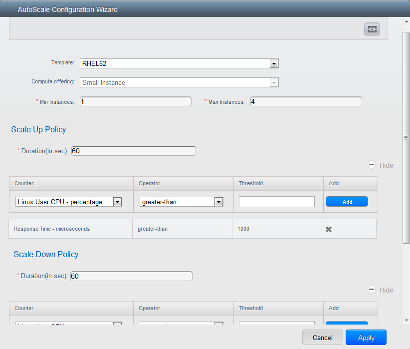
Template: A template consists of a base OS image and application. A template is used to provision the new instance of an application on a scaleup action. When a VM is deployed from a template, the VM can start taking the traffic from the load balancer without any admin intervention. For example, if the VM is deployed for a Web service, it should have the Web server running, the database connected, and so on.
Compute offering: A predefined set of virtual hardware attributes, including CPU speed, number of CPUs, and RAM size, that the user can select when creating a new virtual machine instance. Choose one of the compute offerings to be used while provisioning a VM instance as part of scaleup action.
Min Instance: The minimum number of active VM instances that is assigned to a load balancing rule. The active VM instances are the application instances that are up and serving the traffic, and are being load balanced. This parameter ensures that a load balancing rule has at least the configured number of active VM instances are available to serve the traffic.
Note
If an application, such as SAP, running on a VM instance is down for some reason, the VM is then not counted as part of Min Instance parameter, and the AutoScale feature initiates a scaleup action if the number of active VM instances is below the configured value. Similarly, when an application instance comes up from its earlier down state, this application instance is counted as part of the active instance count and the AutoScale process initiates a scaledown action when the active instance count breaches the Max instance value.
Max Instance: Maximum number of active VM instances that should be assigned toa load balancing rule. This parameter defines the upper limit of active VM instances that can be assigned to a load balancing rule.
Specifying a large value for the maximum instance parameter might result in provisioning large number of VM instances, which in turn leads to a single load balancing rule exhausting the VM instances limit specified at the account or domain level.
Note
If an application, such as SAP, running on a VM instance is down for some reason, the VM is not counted as part of Max Instance parameter. So there may be scenarios where the number of VMs provisioned for a scaleup action might be more than the configured Max Instance value. Once the application instances in the VMs are up from an earlier down state, the AutoScale feature starts aligning to the configured Max Instance value.
Specify the following scale-up and scale-down policies:
- Duration: The duration, in seconds, for which the conditions you specify must be true to trigger a scaleup action. The conditions defined should hold true for the entire duration you specify for an AutoScale action to be invoked.
- Counter: The performance counters expose the state of the monitored instances. By default, CloudStack offers four performance counters: Three SNMP counters and one NetScaler counter. The SNMP counters are Linux User CPU, Linux System CPU, and Linux CPU Idle. The NetScaler counter is ResponseTime. The root administrator can add additional counters into CloudStack by using the CloudStack API.
- Operator: The following five relational operators are supported in AutoScale feature: Greater than, Less than, Less than or equal to, Greater than or equal to, and Equal to.
- Threshold: Threshold value to be used for the counter. Once the counter defined above breaches the threshold value, the AutoScale feature initiates a scaleup or scaledown action.
- Add: Click Add to add the condition.
Additionally, if you want to configure the advanced settings, click Show advanced settings, and specify the following:
- Polling interval: Frequency in which the conditions, combination of counter, operator and threshold, are to be evaluated before taking a scale up or down action. The default polling interval is 30 seconds.
- Quiet Time: This is the cool down period after an AutoScale action is initiated. The time includes the time taken to complete provisioning a VM instance from its template and the time taken by an application to be ready to serve traffic. This quiet time allows the fleet to come up to a stable state before any action can take place. The default is 300 seconds.
- Destroy VM Grace Period: The duration in seconds, after a scaledown action is initiated, to wait before the VM is destroyed as part of scaledown action. This is to ensure graceful close of any pending sessions or transactions being served by the VM marked for destroy. The default is 120 seconds.
- 安全组: 安全 groups provide a way to isolate traffic to the VM instances. A security group is a group of VMs that filter their incoming and outgoing traffic according to a set of rules, called ingress and egress rules. These rules filter network traffic according to the IP address that is attempting to communicate with the VM.
- 磁盘方案: A predefined set of disk size for primary data storage.
- SNMP Community: The SNMP community string to be used by the NetScaler device to query the configured counter value from the provisioned VM instances. Default is public.
- SNMP Port: The port number on which the SNMP agent that run on the provisioned VMs is listening. Default port is 161.
- User: This is the user that the NetScaler device use to invoke scaleup and scaledown API calls to the cloud. If no option is specified, the user who configures AutoScaling is applied. Specify another user name to override.
- Apply: Click Apply to create the AutoScale configuration.
Disabling and Enabling an AutoScale Configuration¶
If you want to perform any maintenance operation on the AutoScale VM instances, disable the AutoScale configuration. When the AutoScale configuration is disabled, no scaleup or scaledown action is performed. You can use this downtime for the maintenance activities. To disable the AutoScale configuration, click the Disable AutoScale button.
The button toggles between enable and disable, depending on whether AutoScale is currently enabled or not. After the maintenance operations are done, you can enable the AutoScale configuration back. To enable, open the AutoScale configuration page again, then click the Enable AutoScale button.
Updating an AutoScale Configuration¶
You can update the various parameters and add or delete the conditions in a scaleup or scaledown rule. Before you update an AutoScale configuration, ensure that you disable the AutoScale load balancer rule by clicking the Disable AutoScale button.
After you modify the required AutoScale parameters, click Apply. To apply the new AutoScale policies, open the AutoScale configuration page again, then click the Enable AutoScale button.
Runtime Considerations¶
- An administrator should not assign a VM to a load balancing rule which is configured for AutoScale.
- Before a VM provisioning is completed if NetScaler is shutdown or restarted, the provisioned VM cannot be a part of the load balancing rule though the intent was to assign it to a load balancing rule. To workaround, rename the AutoScale provisioned VMs based on the rule name or ID so at any point of time the VMs can be reconciled to its load balancing rule.
- Making API calls outside the context of AutoScale, such as destroyVM, on an autoscaled VM leaves the load balancing configuration in an inconsistent state. Though VM is destroyed from the load balancer rule, NetScaler continues to show the VM as a service assigned to a rule.
Global Server 负载均衡 Support¶
CloudStack supports Global Server 负载均衡 (GSLB) functionalities to provide business continuity, and enable seamless resource movement within a CloudStack environment. CloudStack achieve this by extending its functionality of integrating with NetScaler Application Delivery Controller (ADC), which also provides various GSLB capabilities, such as disaster recovery and load balancing. The DNS redirection technique is used to achieve GSLB in CloudStack.
In order to support this functionality, region level services and service provider are introduced. A new service ‘GSLB’ is introduced as a region level service. The GSLB service provider is introduced that will provider the GSLB service. Currently, NetScaler is the supported GSLB provider in CloudStack. GSLB functionality works in an Active-Active data center environment.
About Global Server 负载均衡¶
Global Server 负载均衡 (GSLB) is an extension of load balancing functionality, which is highly efficient in avoiding downtime. Based on the nature of deployment, GSLB represents a set of technologies that is used for various purposes, such as load sharing, disaster recovery, performance, and legal obligations. With GSLB, workloads can be distributed across multiple data centers situated at geographically separated locations. GSLB can also provide an alternate location for accessing a resource in the event of a failure, or to provide a means of shifting traffic easily to simplify maintenance, or both.
Components of GSLB¶
A typical GSLB environment is comprised of the following components:
- GSLB Site: In CloudStack 术语, GSLB sites are represented by zones that are mapped to data centers, each of which has various network appliances. Each GSLB site is managed by a NetScaler appliance that is local to that site. Each of these appliances treats its own site as the local site and all other sites, managed by other appliances, as remote sites. It is the central entity in a GSLB deployment, and is represented by a name and an IP address.
- GSLB Services: A GSLB service is typically represented by a load balancing or content switching virtual server. In a GSLB environment, you can have a local as well as remote GSLB services. A local GSLB service represents a local load balancing or content switching virtual server. A remote GSLB service is the one configured at one of the other sites in the GSLB setup. At each site in the GSLB setup, you can create one local GSLB service and any number of remote GSLB services.
- GSLB Virtual Servers: A GSLB virtual server refers to one or more GSLB services and balances traffic between traffic across the VMs in multiple zones by using the CloudStack functionality. It evaluates the configured GSLB methods or algorithms to select a GSLB service to which to send the client requests. One or more virtual servers from different zones are bound to the GSLB virtual server. GSLB virtual server does not have a public IP associated with it, instead it will have a FQDN DNS name.
- 负载均衡 or Content Switching Virtual Servers: According to Citrix NetScaler terminology, a load balancing or content switching virtual server represents one or many servers on the local network. Clients send their requests to the load balancing or content switching virtual server’s virtual IP (VIP) address, and the virtual server balances the load across the local servers. After a GSLB virtual server selects a GSLB service representing either a local or a remote load balancing or content switching virtual server, the client sends the request to that virtual server’s VIP address.
- DNS VIPs: DNS virtual IP represents a load balancing DNS virtual server on the GSLB service provider. The DNS requests for domains for which the GSLB service provider is authoritative can be sent to a DNS VIP.
- Authoritative DNS: ADNS (Authoritative Domain Name Server) is a service that provides actual answer to DNS queries, such as web site IP address. In a GSLB environment, an ADNS service responds only to DNS requests for domains for which the GSLB service provider is authoritative. When an ADNS service is configured, the service provider owns that IP address and advertises it. When you create an ADNS service, the NetScaler responds to DNS queries on the configured ADNS service IP and port.
How Does GSLB Works in CloudStack?¶
Global server load balancing is used to manage the traffic flow to a web site hosted on two separate zones that ideally are in different geographic locations. The following is an illustration of how GLSB functionality is provided in CloudStack: An organization, xyztelco, has set up a public cloud that spans two zones, Zone-1 and Zone-2, across geographically separated data centers that are managed by CloudStack. Tenant-A of the cloud launches a highly available solution by using xyztelco cloud. For that purpose, they launch two instances each in both the zones: VM1 and VM2 in Zone-1 and VM5 and VM6 in Zone-2. Tenant-A acquires a public IP, IP-1 in Zone-1, and configures a load balancer rule to load balance the traffic between VM1 and VM2 instances. CloudStack orchestrates setting up a virtual server on the LB service provider in Zone-1. Virtual server 1 that is set up on the LB service provider in Zone-1 represents a publicly accessible virtual server that client reaches at IP-1. The client traffic to virtual server 1 at IP-1 will be load balanced across VM1 and VM2 instances.
Tenant-A acquires another public IP, IP-2 in Zone-2 and sets up a load balancer rule to load balance the traffic between VM5 and VM6 instances. Similarly in Zone-2, CloudStack orchestrates setting up a virtual server on the LB service provider. Virtual server 2 that is setup on the LB service provider in Zone-2 represents a publicly accessible virtual server that client reaches at IP-2. The client traffic that reaches virtual server 2 at IP-2 is load balanced across VM5 and VM6 instances. At this point Tenant-A has the service enabled in both the zones, but has no means to set up a disaster recovery plan if one of the zone fails. Additionally, there is no way for Tenant-A to load balance the traffic intelligently to one of the zones based on load, proximity and so on. The cloud administrator of xyztelco provisions a GSLB service provider to both the zones. A GSLB provider is typically an ADC that has the ability to act as an ADNS (Authoritative Domain Name Server) and has the mechanism to monitor health of virtual servers both at local and remote sites. The cloud admin enables GSLB as a service to the tenants that use zones 1 and 2.
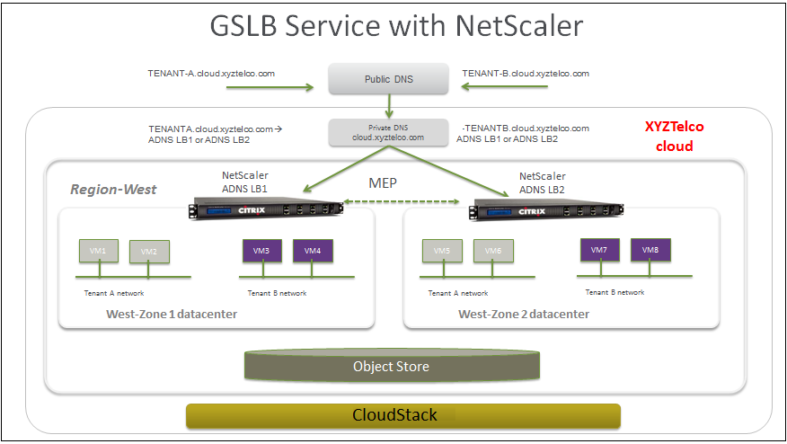
Tenant-A wishes to leverage the GSLB service provided by the xyztelco cloud. Tenant-A configures a GSLB rule to load balance traffic across virtual server 1 at Zone-1 and virtual server 2 at Zone-2. The domain name is provided as A.xyztelco.com. CloudStack orchestrates setting up GSLB virtual server 1 on the GSLB service provider at Zone-1. CloudStack binds virtual server 1 of Zone-1 and virtual server 2 of Zone-2 to GLSB virtual server 1. GSLB virtual server 1 is configured to start monitoring the health of virtual server 1 and 2 in Zone-1. CloudStack will also orchestrate setting up GSLB virtual server 2 on GSLB service provider at Zone-2. CloudStack will bind virtual server 1 of Zone-1 and virtual server 2 of Zone-2 to GLSB virtual server 2. GSLB virtual server 2 is configured to start monitoring the health of virtual server 1 and 2. CloudStack will bind the domain A.xyztelco.com to both the GSLB virtual server 1 and 2. At this point, Tenant-A service will be globally reachable at A.xyztelco.com. The private DNS server for the domain xyztelcom.com is configured by the admin out-of-band to resolve the domain A.xyztelco.com to the GSLB providers at both the zones, which are configured as ADNS for the domain A.xyztelco.com. A client when sends a DNS request to resolve A.xyztelcom.com, will eventually get DNS delegation to the address of GSLB providers at zone 1 and 2. A client DNS request will be received by the GSLB provider. The GSLB provider, depending on the domain for which it needs to resolve, will pick up the GSLB virtual server associated with the domain. Depending on the health of the virtual servers being load balanced, DNS request for the domain will be resolved to the public IP associated with the selected virtual server.
Configuring GSLB¶
To configure a GSLB deployment, you must first configure a standard load balancing setup for each zone. This enables you to balance load across the different servers in each zone in the region. Then on the NetScaler side, configure both NetScaler appliances that you plan to add to each zone as authoritative DNS (ADNS) servers. Next, create a GSLB site for each zone, configure GSLB virtual servers for each site, create GLSB services, and bind the GSLB services to the GSLB virtual servers. Finally, bind the domain to the GSLB virtual servers. The GSLB configurations on the two appliances at the two different zones are identical, although each sites load-balancing configuration is specific to that site.
Perform the following as a cloud administrator. As per the example given above, the administrator of xyztelco is the one who sets up GSLB:
In the cloud.dns.name global parameter, specify the DNS name of your tenant’s cloud that make use of the GSLB service.
On the NetScaler side, configure GSLB as given in Configuring Global Server 负载均衡 (GSLB):
Configuring a standard load balancing setup.
Configure Authoritative DNS, as explained in Configuring an Authoritative DNS Service.
Configure a GSLB site with site name formed from the domain name details.
Configure a GSLB site with the site name formed from the domain name.
As per the example given above, the site names are A.xyztelco.com and B.xyztelco.com.
For more information, see Configuring a Basic GSLB Site.
Configure a GSLB virtual server.
For more information, see Configuring a GSLB Virtual Server.
Configure a GSLB service for each virtual server.
For more information, see Configuring a GSLB Service.
Bind the GSLB services to the GSLB virtual server.
For more information, see Binding GSLB Services to a GSLB Virtual Server.
Bind domain name to GSLB virtual server. Domain name is obtained from the domain details.
For more information, see Binding a Domain to a GSLB Virtual Server.
In each zone that are participating in GSLB, add GSLB-enabled NetScaler device.
For more information, see Enabling GSLB in NetScaler.
As a domain administrator/ user perform the following:
Add a GSLB rule on both the sites.
See “Adding a GSLB Rule”.
Assign load balancer rules.
See “Assigning 负载均衡 Rules to GSLB”.
前提 and Guidelines¶
The GSLB functionality is supported both Basic and Advanced zones.
GSLB is added as a new network service.
GSLB service provider can be added to a physical network in a zone.
The admin is allowed to enable or disable GSLB functionality at region level.
The admin is allowed to configure a zone as GSLB capable or enabled.
A zone shall be considered as GSLB capable only if a GSLB service provider is provisioned in the zone.
When users have VMs deployed in multiple availability zones which are GSLB enabled, they can use the GSLB functionality to load balance traffic across the VMs in multiple zones.
The users can use GSLB to load balance across the VMs across zones in a region only if the admin has enabled GSLB in that region.
The users can load balance traffic across the availability zones in the same region or different regions.
The admin can configure DNS name for the entire cloud.
The users can specify an unique name across the cloud for a globally load balanced service. The provided name is used as the domain name under the DNS name associated with the cloud.
The user-provided name along with the admin-provided DNS name is used to produce a globally resolvable FQDN for the globally load balanced service of the user. For example, if the admin has configured xyztelco.com as the DNS name for the cloud, and user specifies ‘foo’ for the GSLB virtual service, then the FQDN name of the GSLB virtual service is foo.xyztelco.com.
While setting up GSLB, users can select a load balancing method, such as round robin, for using across the zones that are part of GSLB.
The user shall be able to set weight to zone-level virtual server. Weight shall be considered by the load balancing method for distributing the traffic.
The GSLB functionality shall support session persistence, where series of client requests for particular domain name is sent to a virtual server on the same zone.
Statistics is collected from each GSLB virtual server.
Enabling GSLB in NetScaler¶
In each zone, add GSLB-enabled NetScaler device for load balancing.
Log in as administrator to the CloudStack UI.
In the left navigation bar, click Infrastructure.
In Zones, click View More.
Choose the zone you want to work with.
Click the Physical Network tab, then click the name of the physical network.
In the Network Service Providers node of the diagram, click Configure.
You might have to scroll down to see this.
Click NetScaler.
Click Add NetScaler device and provide the following:
For NetScaler:
- IP Address: The IP address of the SDX.
- Username/Password: The authentication credentials to access the device. CloudStack uses these credentials to access the device.
- Type: The type of device that is being added. It could be F5 Big Ip Load Balancer, NetScaler VPX, NetScaler MPX, or NetScaler SDX. For a comparison of the NetScaler types, see the CloudStack 管理员手册.
- Public interface: Interface of device that is configured to be part of the public network.
- Private interface: Interface of device that is configured to be part of the private network.
- GSLB service: Select this option.
- GSLB service Public IP: The public IP address of the NAT translator for a GSLB service that is on a private network.
- GSLB service Private IP: The private IP of the GSLB service.
- Number of Retries. Number of times to attempt a command on the device before considering the operation failed. Default is 2.
- Capacity: The number of networks the device can handle.
- Dedicated: When marked as dedicated, this device will be dedicated to a single account. When Dedicated is checked, the value in the Capacity field has no significance implicitly, its value is 1.
Click OK.
Adding a GSLB Rule¶
Log in to the CloudStack UI as a domain administrator or user.
In the left navigation pane, click Region.
Select the region for which you want to create a GSLB rule.
In the Details tab, click View GSLB.
Click Add GSLB.
The Add GSLB page is displayed as follows:
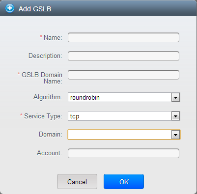
Specify the following:
- Name: Name for the GSLB rule.
- Description: (Optional) A short description of the GSLB rule that can be displayed to users.
- GSLB Domain Name: A preferred domain name for the service.
- Algorithm: (Optional) The algorithm to use to load balance the traffic across the zones. The options are Round Robin, Least Connection, and Proximity.
- Service Type: The transport protocol to use for GSLB. The options are TCP and UDP.
- Domain: (Optional) The domain for which you want to create the GSLB rule.
- Account: (Optional) The account on which you want to apply the GSLB rule.
Click OK to confirm.
Assigning 负载均衡 Rules to GSLB¶
- Log in to the CloudStack UI as a domain administrator or user.
- In the left navigation pane, click Region.
- Select the region for which you want to create a GSLB rule.
- In the Details tab, click View GSLB.
- Select the desired GSLB.
- Click view assigned load balancing.
- Click assign more load balancing.
- Select the load balancing rule you have created for the zone.
- Click OK to confirm.
Known Limitation¶
Currently, CloudStack does not support orchestration of services across the zones. The notion of services and service providers in region are to be introduced.
Guest IP Ranges¶
The IP ranges for guest network traffic are set on a per-account basis by the user. This allows the users to configure their network in a fashion that will enable VPN linking between their guest network and their clients.
In shared networks in Basic zone and 安全 Group-enabled Advanced networks, you will have the flexibility to add multiple guest IP ranges from different subnets. You can add or remove one IP range at a time. For more information, see “About Multiple IP Ranges”.
Acquiring a New IP Address¶
Log in to the CloudStack UI as an administrator or end user.
In the left navigation, choose Network.
Click the name of the network where you want to work with.
Click View IP Addresses.
Click Acquire New IP.
The Acquire New IP window is displayed.
Specify whether you want cross-zone IP or not.
If you want Portable IP click Yes in the confirmation dialog. If you want a normal Public IP click No.
For more information on Portable IP, see “Portable IPs”.
Within a few moments, the new IP address should appear with the state Allocated. You can now use the IP address in port forwarding or static NAT rules.
Releasing an IP Address¶
When the last rule for an IP address is removed, you can release that IP address. The IP address still belongs to the VPC; however, it can be picked up for any guest network again.
- Log in to the CloudStack UI as an administrator or end user.
- In the left navigation, choose Network.
- Click the name of the network where you want to work with.
- Click View IP Addresses.
- Click the IP address you want to release.
- Click the Release IP button.

Static NAT¶
A static NAT rule maps a public IP address to the private IP address of a VM in order to allow Internet traffic into the VM. The public IP address always remains the same, which is why it is called static NAT. This section tells how to enable or disable static NAT for a particular IP address.
Enabling or Disabling Static NAT¶
If port forwarding rules are already in effect for an IP address, you cannot enable static NAT to that IP.
If a guest VM is part of more than one network, static NAT rules will function only if they are defined on the default network.
Log in to the CloudStack UI as an administrator or end user.
In the left navigation, choose Network.
Click the name of the network where you want to work with.
Click View IP Addresses.
Click the IP address you want to work with.
Click the Static NAT
 button.
button.The button toggles between Enable and Disable, depending on whether static NAT is currently enabled for the IP address.
If you are enabling static NAT, a dialog appears where you can choose the destination VM and click Apply.
IP 转发和防火墙¶
By default, all incoming traffic to the public IP address is rejected. All outgoing traffic from the guests is also blocked by default.
To allow outgoing traffic, follow the procedure in Egress Firewall Rules in an Advanced Zone.
To allow incoming traffic, users may set up firewall rules and/or port forwarding rules. For example, you can use a firewall rule to open a range of ports on the public IP address, such as 33 through 44. Then use port forwarding rules to direct traffic from individual ports within that range to specific ports on user VMs. For example, one port forwarding rule could route incoming traffic on the public IP’s port 33 to port 100 on one user VM’s private IP.
Firewall Rules¶
By default, all incoming traffic to the public IP address is rejected by the firewall. To allow external traffic, you can open firewall ports by specifying firewall rules. You can optionally specify one or more CIDRs to filter the source IPs. This is useful when you want to allow only incoming requests from certain IP addresses.
You cannot use firewall rules to open ports for an elastic IP address. When elastic IP is used, outside access is instead controlled through the use of security groups. See “Adding a 安全 Group”.
In an advanced zone, you can also create egress firewall rules by using the virtual router. For more information, see “Egress Firewall Rules in an Advanced Zone”.
Firewall rules can be created using the Firewall tab in the Management Server UI. This tab is not displayed by default when CloudStack is installed. To display the Firewall tab, the CloudStack administrator must set the global configuration parameter firewall.rule.ui.enabled to “true.”
To create a firewall rule:
- Log in to the CloudStack UI as an administrator or end user.
- In the left navigation, choose Network.
- Click the name of the network where you want to work with.
- Click View IP Addresses.
- Click the IP address you want to work with.
- Click the Configuration tab and fill in the following values.
- Source CIDR: (Optional) To accept only traffic from IP addresses within a particular address block, enter a CIDR or a comma-separated list of CIDRs. Example: 192.168.0.0/22. Leave empty to allow all CIDRs.
- Protocol: The communication protocol in use on the opened port(s).
- Start Port and End Port: The port(s) you want to open on the firewall. If you are opening a single port, use the same number in both fields
- ICMP Type and ICMP Code: Used only if Protocol is set to ICMP. Provide the type and code required by the ICMP protocol to fill out the ICMP header. Refer to ICMP documentation for more details if you are not sure what to enter
- Click Add.
Egress Firewall Rules in an Advanced Zone¶
The egress traffic originates from a private network to a public network, such as the Internet. By default, the egress traffic is blocked in default network offerings, so no outgoing traffic is allowed from a guest network to the Internet. However, you can control the egress traffic in an Advanced zone by creating egress firewall rules. When an egress firewall rule is applied, the traffic specific to the rule is allowed and the remaining traffic is blocked. When all the firewall rules are removed the default policy, Block, is applied.
前提 and Guidelines¶
Consider the following scenarios to apply egress firewall rules:
- Egress firewall rules are supported on Juniper SRX and virtual router.
- The egress firewall rules are not supported on shared networks.
- Allow the egress traffic from specified source CIDR. The Source CIDR is part of guest network CIDR.
- Allow the egress traffic with protocol TCP,UDP,ICMP, or ALL.
- Allow the egress traffic with protocol and destination port range. The port range is specified for TCP, UDP or for ICMP type and code.
- The default policy is Allow for the new network offerings, whereas on upgrade existing network offerings with firewall service providers will have the default egress policy Deny.
Configuring an Egress Firewall Rule¶
Log in to the CloudStack UI as an administrator or end user.
In the left navigation, choose Network.
In Select view, choose Guest networks, then click the Guest network you want.
To add an egress rule, click the Egress rules tab and fill out the following fields to specify what type of traffic is allowed to be sent out of VM instances in this guest network:
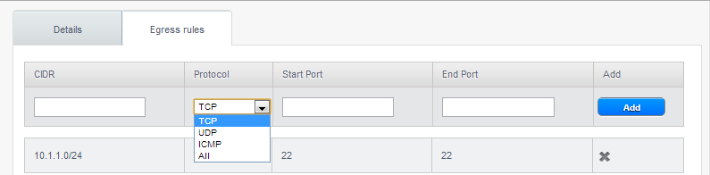
- CIDR: (Add by CIDR only) To send traffic only to the IP addresses within a particular address block, enter a CIDR or a comma-separated list of CIDRs. The CIDR is the base IP address of the destination. For example, 192.168.0.0/22. To allow all CIDRs, set to 0.0.0.0/0.
- Protocol: The networking protocol that VMs uses to send outgoing traffic. The TCP and UDP protocols are typically used for data exchange and end-user communications. The ICMP protocol is typically used to send error messages or network monitoring data.
- Start Port, End Port: (TCP, UDP only) A range of listening ports that are the destination for the outgoing traffic. If you are opening a single port, use the same number in both fields.
- ICMP Type, ICMP Code: (ICMP only) The type of message and error code that are sent.
Click Add.
Configuring the Default Egress Policy¶
The default egress policy for Isolated guest network is configured by using Network offering. Use the create network offering option to determine whether the default policy should be block or allow all the traffic to the public network from a guest network. Use this network offering to create the network. If no policy is specified, by default all the traffic is allowed from the guest network that you create by using this network offering.
You have two options: Allow and Deny.
Allow¶
If you select Allow for a network offering, by default egress traffic is allowed. However, when an egress rule is configured for a guest network, rules are applied to block the specified traffic and rest are allowed. If no egress rules are configured for the network, egress traffic is accepted.
Deny¶
If you select Deny for a network offering, by default egress traffic for the guest network is blocked. However, when an egress rules is configured for a guest network, rules are applied to allow the specified traffic. While implementing a guest network, CloudStack adds the firewall egress rule specific to the default egress policy for the guest network.
This feature is supported only on virtual router and Juniper SRX.
Create a network offering with your desirable default egress policy:
- Log in with admin privileges to the CloudStack UI.
- In the left navigation bar, click 计算方案.
- In Select Offering, choose Network Offering.
- Click Add Network Offering.
- In the dialog, make necessary choices, including firewall provider.
- In the Default egress policy field, specify the behaviour.
- Click OK.
Create an isolated network by using this network offering.
Based on your selection, the network will have the egress public traffic blocked or allowed.
Port Forwarding¶
A port forward service is a set of port forwarding rules that define a policy. A port forward service is then applied to one or more guest VMs. The guest VM then has its inbound network access managed according to the policy defined by the port forwarding service. You can optionally specify one or more CIDRs to filter the source IPs. This is useful when you want to allow only incoming requests from certain IP addresses to be forwarded.
A guest VM can be in any number of port forward services. Port forward services can be defined but have no members. If a guest VM is part of more than one network, port forwarding rules will function only if they are defined on the default network
You cannot use port forwarding to open ports for an elastic IP address. When elastic IP is used, outside access is instead controlled through the use of security groups. See 安全组.
To set up port forwarding:
- Log in to the CloudStack UI as an administrator or end user.
- If you have not already done so, add a public IP address range to a zone in CloudStack. See Adding a Zone and Pod in the 安装 Guide.
- Add one or more VM instances to CloudStack.
- In the left navigation bar, click Network.
- Click the name of the guest network where the VMs are running.
- Choose an existing IP address or acquire a new IP address. See “Acquiring a New IP Address”. Click the name of the IP address in the list.
- Click the Configuration tab.
- In the Port Forwarding node of the diagram, click View All.
- Fill in the following:
- Public Port: The port to which public traffic will be addressed on the IP address you acquired in the previous step.
- Private Port: The port on which the instance is listening for forwarded public traffic.
- Protocol: The communication protocol in use between the two ports
- Click Add.
IP 负载均衡¶
The user may choose to associate the same public IP for multiple guests. CloudStack implements a TCP-level load balancer with the following policies.
- Round-robin
- Least connection
- Source IP
This is similar to port forwarding but the destination may be multiple IP addresses.
DNS 和 DHCP¶
The 虚拟路由器 provides DNS 和 DHCP services to the guests. It proxies DNS requests to the DNS server configured on the Availability Zone.
Remote Access VPN¶
CloudStack account owners can create virtual private networks (VPN) to access their virtual machines. If the guest network is instantiated from a network offering that offers the Remote Access VPN service, the virtual router (based on the System VM) is used to provide the service. CloudStack provides a L2TP-over-IPsec-based remote access VPN service to guest virtual networks. Since each network gets its own virtual router, VPNs are not shared across the networks. VPN clients native to Windows, Mac OS X and iOS can be used to connect to the guest networks. The account owner can create and manage users for their VPN. CloudStack does not use its account database for this purpose but uses a separate table. The VPN user database is shared across all the VPNs created by the account owner. All VPN users get access to all VPNs created by the account owner.
Note
Make sure that not all traffic goes through the VPN. That is, the route installed by the VPN should be only for the guest network and not for all traffic.
- Road Warrior / Remote Access. Users want to be able to connect securely from a home or office to a private network in the cloud. Typically, the IP address of the connecting client is dynamic and cannot be preconfigured on the VPN server.
- Site to Site. In this scenario, two private subnets are connected over the public Internet with a secure VPN tunnel. The cloud user’s subnet (for example, an office network) is connected through a gateway to the network in the cloud. The address of the user’s gateway must be preconfigured on the VPN server in the cloud. Note that although L2TP-over-IPsec can be used to set up Site-to-Site VPNs, this is not the primary intent of this feature. For more information, see “Setting Up a Site-to-Site VPN Connection”.
Configuring Remote Access VPN¶
To set up VPN for the cloud:
- Log in to the CloudStack UI as an administrator or end user.
- In the left navigation, click Global Settings.
- Set the following global configuration parameters.
- remote.access.vpn.client.ip.range - The range of IP addresses to be allocated to remote access VPN clients. The first IP in the range is used by the VPN server.
- remote.access.vpn.psk.length - Length of the IPSec key.
- remote.access.vpn.user.limit - Maximum number of VPN users per account.
To enable VPN for a particular network:
Log in as a user or administrator to the CloudStack UI.
In the left navigation, click Network.
Click the name of the network you want to work with.
Click View IP Addresses.
Click one of the displayed IP address names.
Click the Enable VPN button.
The IPsec key is displayed in a popup window.
Configuring Remote Access VPN in VPC¶
On enabling Remote Access VPN on a VPC, any VPN client present outside the VPC can access VMs present in the VPC by using the Remote VPN connection. The VPN client can be present anywhere except inside the VPC on which the user enabled the Remote Access VPN service.
To enable VPN for a VPC:
Log in as a user or administrator to the CloudStack UI.
In the left navigation, click Network.
In the Select view, select VPC.
All the VPCs that you have created for the account is listed in the page.
Click the Configure button of the VPC.
For each tier, the following options are displayed:
- Internal LB
- Public LB IP
- Static NAT
- Virtual Machines
- CIDR
The following router information is displayed:
- Private Gateways
- Public IP Addresses
- Site-to-Site VPNs
- Network ACL Lists
In the Router node, select Public IP Addresses.
The IP Addresses page is displayed.
Click Source NAT IP address.
Click the Enable VPN button.
Click OK to confirm. The IPsec key is displayed in a pop-up window.
Now, you need to add the VPN users.
- Click the Source NAT IP.
- Select the VPN tab.
- Add the username and the corresponding password of the user you wanted to add.
- Click Add.
- Repeat the same steps to add the VPN users.
Setting Up a Site-to-Site VPN Connection¶
A Site-to-Site VPN connection helps you establish a secure connection from an enterprise datacenter to the cloud infrastructure. This allows users to access the guest VMs by establishing a VPN connection to the virtual router of the account from a device in the datacenter of the enterprise. You can also establish a secure connection between two VPC setups or high availability zones in your environment. Having this facility eliminates the need to establish VPN connections to individual VMs.
The difference from Remote VPN is that Site-to-site VPNs connects entire networks to each other, for example, connecting a branch office network to a company headquarters network. In a site-to-site VPN, hosts do not have VPN client software; they send and receive normal TCP/IP traffic through a VPN gateway.
The supported endpoints on the remote datacenters are:
- Cisco ISR with IOS 12.4 or later
- Juniper J-Series routers with JunOS 9.5 or later
- CloudStack virtual routers
Note
In addition to the specific Cisco and Juniper devices listed above, the expectation is that any Cisco or Juniper device running on the supported operating systems are able to establish VPN connections.
To set up a Site-to-Site VPN connection, perform the following:
Create a Virtual Private Cloud (VPC).
Create a VPN Customer Gateway.
Create a VPN gateway for the VPC that you created.
Create VPN connection from the VPC VPN gateway to the customer VPN gateway.
Creating and Updating a VPN Customer Gateway¶
Note
A VPN customer gateway can be connected to only one VPN gateway at a time.
To add a VPN Customer Gateway:
Log in to the CloudStack UI as an administrator or end user.
In the left navigation, choose Network.
In the Select view, select VPN Customer Gateway.
Click Add VPN Customer Gateway.
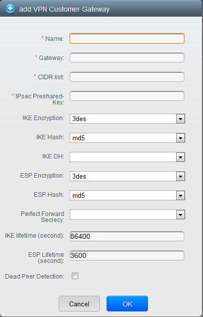
Provide the following information:
Name: A unique name for the VPN customer gateway you create.
Gateway: The IP address for the remote gateway.
CIDR list: The guest CIDR list of the remote subnets. Enter a CIDR or a comma-separated list of CIDRs. Ensure that a guest CIDR list is not overlapped with the VPC’s CIDR, or another guest CIDR. The CIDR must be RFC1918-compliant.
IPsec Preshared Key: Preshared keying is a method where the endpoints of the VPN share a secret key. This key value is used to authenticate the customer gateway and the VPC VPN gateway to each other. The sequence cannot contain a newline or double-quote.
Note
The IKE peers (VPN end points) authenticate each other by computing and sending a keyed hash of data that includes the Preshared key. If the receiving peer is able to create the same hash independently by using its Preshared key, it knows that both peers must share the same secret, thus authenticating the customer gateway.
IKE Encryption: The Internet Key Exchange (IKE) policy for phase-1. The supported encryption algorithms are AES128, AES192, AES256, and 3DES. Authentication is accomplished through the Preshared Keys.
Note
The phase-1 is the first phase in the IKE process. In this initial negotiation phase, the two VPN endpoints agree on the methods to be used to provide security for the underlying IP traffic. The phase-1 authenticates the two VPN gateways to each other, by confirming that the remote gateway has a matching Preshared Key.
IKE Hash: The IKE hash for phase-1. The supported hash algorithms are SHA1 and MD5.
IKE DH: A public-key cryptography protocol which allows two parties to establish a shared secret over an insecure communications channel. The 1536-bit Diffie-Hellman group is used within IKE to establish session keys. The supported options are None, Group-5 (1536-bit) and Group-2 (1024-bit).
ESP Encryption: Encapsulating 安全 Payload (ESP) algorithm within phase-2. The supported encryption algorithms are AES128, AES192, AES256, and 3DES.
Note
The phase-2 is the second phase in the IKE process. The purpose of IKE phase-2 is to negotiate IPSec security associations (SA) to set up the IPSec tunnel. In phase-2, new keying material is extracted from the Diffie-Hellman key exchange in phase-1, to provide session keys to use in protecting the VPN data flow.
ESP Hash: Encapsulating 安全 Payload (ESP) hash for phase-2. Supported hash algorithms are SHA1 and MD5.
Perfect Forward Secrecy: Perfect Forward Secrecy (or PFS) is the property that ensures that a session key derived from a set of long-term public and private keys will not be compromised. This property enforces a new Diffie-Hellman key exchange. It provides the keying material that has greater key material life and thereby greater resistance to cryptographic attacks. The available options are None, Group-5 (1536-bit) and Group-2 (1024-bit). The security of the key exchanges increase as the DH groups grow larger, as does the time of the exchanges.
Note
When PFS is turned on, for every negotiation of a new phase-2 SA the two gateways must generate a new set of phase-1 keys. This adds an extra layer of protection that PFS adds, which ensures if the phase-2 SA’s have expired, the keys used for new phase-2 SA’s have not been generated from the current phase-1 keying material.
IKE Lifetime (seconds): The phase-1 lifetime of the security association in seconds. Default is 86400 seconds (1 day). Whenever the time expires, a new phase-1 exchange is performed.
ESP Lifetime (seconds): The phase-2 lifetime of the security association in seconds. Default is 3600 seconds (1 hour). Whenever the value is exceeded, a re-key is initiated to provide a new IPsec encryption and authentication session keys.
Dead Peer Detection: A method to detect an unavailable Internet Key Exchange (IKE) peer. Select this option if you want the virtual router to query the liveliness of its IKE peer at regular intervals. It’s recommended to have the same configuration of DPD on both side of VPN connection.
Click OK.
Updating and Removing a VPN Customer Gateway¶
You can update a customer gateway either with no VPN connection, or related VPN connection is in error state.
- Log in to the CloudStack UI as an administrator or end user.
- In the left navigation, choose Network.
- In the Select view, select VPN Customer Gateway.
- Select the VPN customer gateway you want to work with.
- To modify the required parameters, click the Edit VPN Customer
Gateway button
- To remove the VPN customer gateway, click the Delete VPN Customer
Gateway button

- Click OK.
Creating a VPN gateway for the VPC¶
Log in to the CloudStack UI as an administrator or end user.
In the left navigation, choose Network.
In the Select view, select VPC.
All the VPCs that you have created for the account is listed in the page.
Click the Configure button of the VPC to which you want to deploy the VMs.
The VPC page is displayed where all the tiers you created are listed in a diagram.
For each tier, the following options are displayed:
- Internal LB
- Public LB IP
- Static NAT
- Virtual Machines
- CIDR
The following router information is displayed:
- Private Gateways
- Public IP Addresses
- Site-to-Site VPNs
- Network ACL Lists
Select Site-to-Site VPN.
If you are creating the VPN gateway for the first time, selecting Site-to-Site VPN prompts you to create a VPN gateway.
In the confirmation dialog, click Yes to confirm.
Within a few moments, the VPN gateway is created. You will be prompted to view the details of the VPN gateway you have created. Click Yes to confirm.
The following details are displayed in the VPN Gateway page:
- IP Address
- Account
- Domain
Creating a VPN Connection¶
Note
CloudStack supports creating up to 8 VPN connections.
Log in to the CloudStack UI as an administrator or end user.
In the left navigation, choose Network.
In the Select view, select VPC.
All the VPCs that you create for the account are listed in the page.
Click the Configure button of the VPC to which you want to deploy the VMs.
The VPC page is displayed where all the tiers you created are listed in a diagram.
Click the Settings icon.
For each tier, the following options are displayed:
- Internal LB
- Public LB IP
- Static NAT
- Virtual Machines
- CIDR
The following router information is displayed:
- Private Gateways
- Public IP Addresses
- Site-to-Site VPNs
- Network ACL Lists
Select Site-to-Site VPN.
The Site-to-Site VPN page is displayed.
From the Select View drop-down, ensure that VPN Connection is selected.
Click Create VPN Connection.
The Create VPN Connection dialog is displayed:
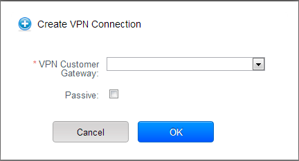
Select the desired customer gateway.
Select Passive if you want to establish a connection between two VPC virtual routers.
If you want to establish a connection between two VPC virtual routers, select Passive only on one of the VPC virtual routers, which waits for the other VPC virtual router to initiate the connection. Do not select Passive on the VPC virtual router that initiates the connection.
Click OK to confirm.
Within a few moments, the VPN Connection is displayed.
The following information on the VPN connection is displayed:
- IP Address
- Gateway
- State
- IPSec Preshared Key
- IKE Policy
- ESP Policy
Site-to-Site VPN Connection Between VPC Networks¶
CloudStack provides you with the ability to establish a site-to-site VPN connection between CloudStack virtual routers. To achieve that, add a passive mode Site-to-Site VPN. With this functionality, users can deploy applications in multiple Availability Zones or VPCs, which can communicate with each other by using a secure Site-to-Site VPN Tunnel.
This feature is supported on all the hypervisors.
Create two VPCs. For example, VPC A and VPC B.
For more information, see “Configuring a Virtual Private Cloud”.
Create VPN gateways on both the VPCs you created.
For more information, see “Creating a VPN gateway for the VPC”.
Create VPN customer gateway for both the VPCs.
For more information, see “Creating and Updating a VPN Customer Gateway”.
Enable a VPN connection on VPC A in passive mode.
For more information, see “Creating a VPN Connection”.
Ensure that the customer gateway is pointed to VPC B. The VPN connection is shown in the Disconnected state.
Enable a VPN connection on VPC B.
Ensure that the customer gateway is pointed to VPC A. Because virtual router of VPC A, in this case, is in passive mode and is waiting for the virtual router of VPC B to initiate the connection, VPC B virtual router should not be in passive mode.
The VPN connection is shown in the Disconnected state.
Creating VPN connection on both the VPCs initiates a VPN connection. Wait for few seconds. The default is 30 seconds for both the VPN connections to show the Connected state.
Restarting and Removing a VPN Connection¶
Log in to the CloudStack UI as an administrator or end user.
In the left navigation, choose Network.
In the Select view, select VPC.
All the VPCs that you have created for the account is listed in the page.
Click the Configure button of the VPC to which you want to deploy the VMs.
The VPC page is displayed where all the tiers you created are listed in a diagram.
Click the Settings icon.
For each tier, the following options are displayed:
- Internal LB
- Public LB IP
- Static NAT
- Virtual Machines
- CIDR
The following router information is displayed:
- Private Gateways
- Public IP Addresses
- Site-to-Site VPNs
- Network ACL Lists
Select Site-to-Site VPN.
The Site-to-Site VPN page is displayed.
From the Select View drop-down, ensure that VPN Connection is selected.
All the VPN connections you created are displayed.
Select the VPN connection you want to work with.
The Details tab is displayed.
To remove a VPN connection, click the Delete VPN connection button

To restart a VPN connection, click the Reset VPN connection button present in the Details tab.
About Inter-VLAN Routing (nTier Apps)¶
Inter-VLAN Routing (nTier Apps) is the capability to route network traffic between VLANs. This feature enables you to build Virtual Private Clouds (VPC), an isolated segment of your cloud, that can hold multi-tier applications. These tiers are deployed on different VLANs that can communicate with each other. You provision VLANs to the tiers your create, and VMs can be deployed on different tiers. The VLANs are connected to a virtual router, which facilitates communication between the VMs. In effect, you can segment VMs by means of VLANs into different networks that can host multi-tier applications, such as Web, Application, or Database. Such segmentation by means of VLANs logically separate application VMs for higher security and lower broadcasts, while remaining physically connected to the same device.
This feature is supported on XenServer, KVM, and VMware hypervisors.
The major advantages are:
The administrator can deploy a set of VLANs and allow users to deploy VMs on these VLANs. A guest VLAN is randomly alloted to an account from a pre-specified set of guest VLANs. All the VMs of a certain tier of an account reside on the guest VLAN allotted to that account.
Note
A VLAN allocated for an account cannot be shared between multiple accounts.
The administrator can allow users create their own VPC and deploy the application. In this scenario, the VMs that belong to the account are deployed on the VLANs allotted to that account.
Both administrators and users can create multiple VPCs. The guest network NIC is plugged to the VPC virtual router when the first VM is deployed in a tier.
The administrator can create the following gateways to send to or receive traffic from the VMs:
- VPN Gateway: For more information, see “Creating a VPN gateway for the VPC”.
- Public Gateway: The public gateway for a VPC is added to the virtual router when the virtual router is created for VPC. The public gateway is not exposed to the end users. You are not allowed to list it, nor allowed to create any static routes.
- Private Gateway: For more information, see “Adding a Private Gateway to a VPC”.
Both administrators and users can create various possible destinations-gateway combinations. However, only one gateway of each type can be used in a deployment.
For example:
- VLANs and Public Gateway: For example, an application is deployed in the cloud, and the Web application VMs communicate with the Internet.
- VLANs, VPN Gateway, and Public Gateway: For example, an application is deployed in the cloud; the Web application VMs communicate with the Internet; and the database VMs communicate with the on-premise devices.
The administrator can define Network Access Control List (ACL) on the virtual router to filter the traffic among the VLANs or between the Internet and a VLAN. You can define ACL based on CIDR, port range, protocol, type code (if ICMP protocol is selected) and Ingress/Egress type.
The following figure shows the possible deployment scenarios of a Inter-VLAN setup:
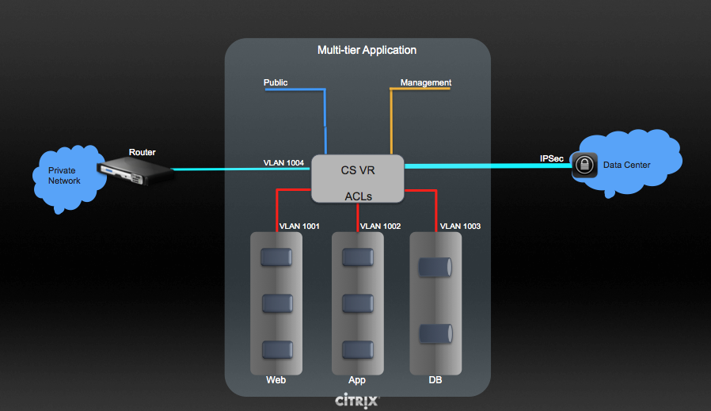
To set up a multi-tier Inter-VLAN deployment, see “Configuring a Virtual Private Cloud”.
Configuring a Virtual Private Cloud¶
About Virtual Private Clouds¶
CloudStack Virtual Private Cloud is a private, isolated part of CloudStack. A VPC can have its own virtual network topology that resembles a traditional physical network. You can launch VMs in the virtual network that can have private addresses in the range of your choice, for example: 10.0.0.0/16. You can define network tiers within your VPC network range, which in turn enables you to group similar kinds of instances based on IP address range.
For example, if a VPC has the private range 10.0.0.0/16, its guest networks can have the network ranges 10.0.1.0/24, 10.0.2.0/24, 10.0.3.0/24, and so on.
Major Components of a VPC¶
A VPC is comprised of the following network components:
- VPC: A VPC acts as a container for multiple isolated networks that can communicate with each other via its virtual router.
- Network Tiers: Each tier acts as an isolated network with its own VLANs and CIDR list, where you can place groups of resources, such as VMs. The tiers are segmented by means of VLANs. The NIC of each tier acts as its gateway.
- 虚拟路由器: A virtual router is automatically created and started when you create a VPC. The virtual router connect the tiers and direct traffic among the public gateway, the VPN gateways, and the NAT instances. For each tier, a corresponding NIC and IP exist in the virtual router. The virtual router provides DNS 和 DHCP services through its IP.
- Public Gateway: The traffic to and from the Internet routed to the VPC through the public gateway. In a VPC, the public gateway is not exposed to the end user; therefore, static routes are not support for the public gateway.
- Private Gateway: All the traffic to and from a private network routed to the VPC through the private gateway. For more information, see “Adding a Private Gateway to a VPC”.
- VPN Gateway: The VPC side of a VPN connection.
- Site-to-Site VPN Connection: A hardware-based VPN connection between your VPC and your datacenter, home network, or co-location facility. For more information, see “Setting Up a Site-to-Site VPN Connection”.
- Customer Gateway: The customer side of a VPN Connection. For more information, see “Creating and Updating a VPN Customer Gateway”.
- NAT Instance: An instance that provides Port Address Translation for instances to access the Internet via the public gateway. For more information, see “Enabling or Disabling Static NAT on a VPC”.
- Network ACL: Network ACL is a group of Network ACL items. Network ACL items are nothing but numbered rules that are evaluated in order, starting with the lowest numbered rule. These rules determine whether traffic is allowed in or out of any tier associated with the network ACL. For more information, see “Configuring Network Access Control List”.
Network Architecture in a VPC¶
In a VPC, the following four basic options of network architectures are present:
- VPC with a public gateway only
- VPC with public and private gateways
- VPC with public and private gateways and site-to-site VPN access
- VPC with a private gateway only and site-to-site VPN access
Connectivity Options for a VPC¶
You can connect your VPC to:
- The Internet through the public gateway.
- The corporate datacenter by using a site-to-site VPN connection through the VPN gateway.
- Both the Internet and your corporate datacenter by using both the public gateway and a VPN gateway.
VPC Network Considerations¶
Consider the following before you create a VPC:
- A VPC, by default, is created in the enabled state.
- A VPC can be created in Advance zone only, and can’t belong to more than one zone at a time.
- The default number of VPCs an account can create is 20. However, you can change it by using the max.account.vpcs global parameter, which controls the maximum number of VPCs an account is allowed to create.
- The default number of tiers an account can create within a VPC is 3. You can configure this number by using the vpc.max.networks parameter.
- Each tier should have an unique CIDR in the VPC. Ensure that the tier’s CIDR should be within the VPC CIDR range.
- A tier belongs to only one VPC.
- All network tiers inside the VPC should belong to the same account.
- When a VPC is created, by default, a SourceNAT IP is allocated to it. The Source NAT IP is released only when the VPC is removed.
- A public IP can be used for only one purpose at a time. If the IP is a sourceNAT, it cannot be used for StaticNAT or port forwarding.
- The instances can only have a private IP address that you provision. To communicate with the Internet, enable NAT to an instance that you launch in your VPC.
- Only new networks can be added to a VPC. The maximum number of networks per VPC is limited by the value you specify in the vpc.max.networks parameter. The default value is three.
- The load balancing service can be supported by only one tier inside the VPC.
- If an IP address is assigned to a tier:
- That IP can’t be used by more than one tier at a time in the VPC. For example, if you have tiers A and B, and a public IP1, you can create a port forwarding rule by using the IP either for A or B, but not for both.
- That IP can’t be used for StaticNAT, load balancing, or port forwarding rules for another guest network inside the VPC.
- Remote access VPN is not supported in VPC networks.
Adding a Virtual Private Cloud¶
When creating the VPC, you simply provide the zone and a set of IP addresses for the VPC network address space. You specify this set of addresses in the form of a Classless Inter-Domain Routing (CIDR) block.
Log in to the CloudStack UI as an administrator or end user.
In the left navigation, choose Network.
In the Select view, select VPC.
Click Add VPC. The Add VPC page is displayed as follows:
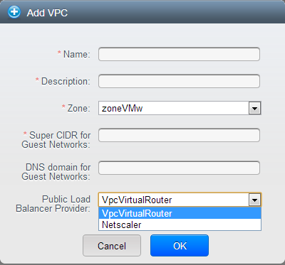
Provide the following information:
- Name: A short name for the VPC that you are creating.
- Description: A brief description of the VPC.
- Zone: Choose the zone where you want the VPC to be available.
- Super CIDR for Guest Networks: Defines the CIDR range for all the tiers (guest networks) within a VPC. When you create a tier, ensure that its CIDR is within the Super CIDR value you enter. The CIDR must be RFC1918 compliant.
- DNS domain for Guest Networks: If you want to assign a special domain name, specify the DNS suffix. This parameter is applied to all the tiers within the VPC. That implies, all the tiers you create in the VPC belong to the same DNS domain. If the parameter is not specified, a DNS domain name is generated automatically.
- Public Load Balancer Provider: You have two options: VPC 虚拟路由器 and Netscaler.
Click OK.
Adding Tiers¶
Tiers are distinct locations within a VPC that act as isolated networks, which do not have access to other tiers by default. Tiers are set up on different VLANs that can communicate with each other by using a virtual router. Tiers provide inexpensive, low latency network connectivity to other tiers within the VPC.
Log in to the CloudStack UI as an administrator or end user.
In the left navigation, choose Network.
In the Select view, select VPC.
All the VPC that you have created for the account is listed in the page.
Note
The end users can see their own VPCs, while root and domain admin can see any VPC they are authorized to see.
Click the Configure button of the VPC for which you want to set up tiers.
Click Create network.
The Add new tier dialog is displayed, as follows:
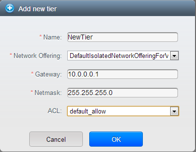
If you have already created tiers, the VPC diagram is displayed. Click Create Tier to add a new tier.
Specify the following:
All the fields are mandatory.
Name: A unique name for the tier you create.
Network Offering: The following default network offerings are listed: Internal LB, DefaultIsolatedNetworkOfferingForVpcNetworksNoLB, DefaultIsolatedNetworkOfferingForVpcNetworks
In a VPC, only one tier can be created by using LB-enabled network offering.
Gateway: The gateway for the tier you create. Ensure that the gateway is within the Super CIDR range that you specified while creating the VPC, and is not overlapped with the CIDR of any existing tier within the VPC.
VLAN: The VLAN ID for the tier that the root admin creates.
This option is only visible if the network offering you selected is VLAN-enabled.
For more information, see “Assigning VLANs to Isolated Networks”.
Netmask: The netmask for the tier you create.
For example, if the VPC CIDR is 10.0.0.0/16 and the network tier CIDR is 10.0.1.0/24, the gateway of the tier is 10.0.1.1, and the netmask of the tier is 255.255.255.0.
Click OK.
Continue with configuring access control list for the tier.
Configuring Network Access Control List¶
Define Network Access Control List (ACL) on the VPC virtual router to control incoming (ingress) and outgoing (egress) traffic between the VPC tiers, and the tiers and Internet. By default, all incoming traffic to the guest networks is blocked and all outgoing traffic from guest networks is allowed, once you add an ACL rule for outgoing traffic, then only outgoing traffic specified in this ACL rule is allowed, the rest is blocked. To open the ports, you must create a new network ACL. The network ACLs can be created for the tiers only if the NetworkACL service is supported.
About Network ACL Lists¶
In CloudStack 术语, Network ACL is a group of Network ACL items. Network ACL items are nothing but numbered rules that are evaluated in order, starting with the lowest numbered rule. These rules determine whether traffic is allowed in or out of any tier associated with the network ACL. You need to add the Network ACL items to the Network ACL, then associate the Network ACL with a tier. Network ACL is associated with a VPC and can be assigned to multiple VPC tiers within a VPC. A Tier is associated with a Network ACL at all the times. Each tier can be associated with only one ACL.
The default Network ACL is used when no ACL is associated. Default behavior is all the incoming traffic is blocked and outgoing traffic is allowed from the tiers. Default network ACL cannot be removed or modified. 目录 of the default Network ACL is:
| Rule | Protocol | Traffic type | Action | CIDR |
|---|---|---|---|---|
| 1 | All | Ingress | Deny | 0.0.0.0/0 |
| 2 | All | Egress | Deny | 0.0.0.0/0 |
Creating ACL Lists¶
Log in to the CloudStack UI as an administrator or end user.
In the left navigation, choose Network.
In the Select view, select VPC.
All the VPCs that you have created for the account is listed in the page.
Click the Configure button of the VPC.
For each tier, the following options are displayed:
- Internal LB
- Public LB IP
- Static NAT
- Virtual Machines
- CIDR
The following router information is displayed:
- Private Gateways
- Public IP Addresses
- Site-to-Site VPNs
- Network ACL Lists
Select Network ACL Lists.
The following default rules are displayed in the Network ACLs page: default_allow, default_deny.
Click Add ACL Lists, and specify the following:
- ACL List Name: A name for the ACL list.
- Description: A short description of the ACL list that can be displayed to users.
Creating an ACL Rule¶
Log in to the CloudStack UI as an administrator or end user.
In the left navigation, choose Network.
In the Select view, select VPC.
All the VPCs that you have created for the account is listed in the page.
Click the Configure button of the VPC.
Select Network ACL Lists.
In addition to the custom ACL lists you have created, the following default rules are displayed in the Network ACLs page: default_allow, default_deny.
Select the desired ACL list.
Select the ACL List Rules tab.
To add an ACL rule, fill in the following fields to specify what kind of network traffic is allowed in the VPC.
- Rule Number: The order in which the rules are evaluated.
- CIDR: The CIDR acts as the Source CIDR for the Ingress rules, and Destination CIDR for the Egress rules. To accept traffic only from or to the IP addresses within a particular address block, enter a CIDR or a comma-separated list of CIDRs. The CIDR is the base IP address of the incoming traffic. For example, 192.168.0.0/22. To allow all CIDRs, set to 0.0.0.0/0.
- Action: What action to be taken. Allow traffic or block.
- Protocol: The networking protocol that sources use to send traffic to the tier. The TCP and UDP protocols are typically used for data exchange and end-user communications. The ICMP protocol is typically used to send error messages or network monitoring data. All supports all the traffic. Other option is Protocol Number.
- Start Port, End Port (TCP, UDP only): A range of listening ports that are the destination for the incoming traffic. If you are opening a single port, use the same number in both fields.
- Protocol Number: The protocol number associated with IPv4 or IPv6. For more information, see Protocol Numbers.
- ICMP Type, ICMP Code (ICMP only): The type of message and error code that will be sent.
- Traffic Type: The type of traffic: Incoming or outgoing.
Click Add. The ACL rule is added.
You can edit the tags assigned to the ACL rules and delete the ACL rules you have created. Click the appropriate button in the Details tab.
Creating a Tier with Custom ACL List¶
Create a VPC.
Create a custom ACL list.
Add ACL rules to the ACL list.
Create a tier in the VPC.
Select the desired ACL list while creating a tier.
Click OK.
Assigning a Custom ACL List to a Tier¶
Create a VPC.
Create a tier in the VPC.
Associate the tier with the default ACL rule.
Create a custom ACL list.
Add ACL rules to the ACL list.
Select the tier for which you want to assign the custom ACL.
Click the Replace ACL List icon.
The Replace ACL List dialog is displayed.
Select the desired ACL list.
Click OK.
Adding a Private Gateway to a VPC¶
A private gateway can be added by the root admin only. The VPC private network has 1:1 relationship with the NIC of the physical network. You can configure multiple private gateways to a single VPC. No gateways with duplicated VLAN and IP are allowed in the same data center.
Log in to the CloudStack UI as an administrator or end user.
In the left navigation, choose Network.
In the Select view, select VPC.
All the VPCs that you have created for the account is listed in the page.
Click the Configure button of the VPC to which you want to configure load balancing rules.
The VPC page is displayed where all the tiers you created are listed in a diagram.
Click the Settings icon.
The following options are displayed.
- Internal LB
- Public LB IP
- Static NAT
- Virtual Machines
- CIDR
The following router information is displayed:
- Private Gateways
- Public IP Addresses
- Site-to-Site VPNs
- Network ACL Lists
Select Private Gateways.
The Gateways page is displayed.
Click Add new gateway:
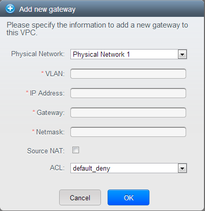
Specify the following:
Physical Network: The physical network you have created in the zone.
IP Address: The IP address associated with the VPC gateway.
Gateway: The gateway through which the traffic is routed to and from the VPC.
Netmask: The netmask associated with the VPC gateway.
VLAN: The VLAN associated with the VPC gateway.
Source NAT: Select this option to enable the source NAT service on the VPC private gateway.
ACL: Controls both ingress and egress traffic on a VPC private gateway. By default, all the traffic is blocked.
See “ACL on Private Gateway”.
The new gateway appears in the list. You can repeat these steps to add more gateway for this VPC.
Source NAT on Private Gateway¶
You might want to deploy multiple VPCs with the same super CIDR and guest tier CIDR. Therefore, multiple guest VMs from different VPCs can have the same IPs to reach a enterprise data center through the private gateway. In such cases, a NAT service need to be configured on the private gateway to avoid IP conflicts. If Source NAT is enabled, the guest VMs in VPC reaches the enterprise network via private gateway IP address by using the NAT service.
The Source NAT service on a private gateway can be enabled while adding the private gateway. On deletion of a private gateway, source NAT rules specific to the private gateway are deleted.
To enable source NAT on existing private gateways, delete them and create afresh with source NAT.
ACL on Private Gateway¶
The traffic on the VPC private gateway is controlled by creating both ingress and egress network ACL rules. The ACLs contains both allow and deny rules. As per the rule, all the ingress traffic to the private gateway interface and all the egress traffic out from the private gateway interface are blocked.
You can change this default behaviour while creating a private gateway. Alternatively, you can do the following:
In a VPC, identify the Private Gateway you want to work with.
In the Private Gateway page, do either of the following:
- Use the Quickview. See 3.
- Use the Details tab. See 4 through .
In the Quickview of the selected Private Gateway, click Replace ACL, select the ACL rule, then click OK
Click the IP address of the Private Gateway you want to work with.
In the Detail tab, click the Replace ACL button.
The Replace ACL dialog is displayed.
select the ACL rule, then click OK.
Wait for few seconds. You can see that the new ACL rule is displayed in the Details page.
Creating a Static Route¶
CloudStack enables you to specify routing for the VPN connection you create. You can enter one or CIDR addresses to indicate which traffic is to be routed back to the gateway.
In a VPC, identify the Private Gateway you want to work with.
In the Private Gateway page, click the IP address of the Private Gateway you want to work with.
Select the Static Routes tab.
Specify the CIDR of destination network.
Click Add.
Wait for few seconds until the new route is created.
Blacklisting Routes¶
CloudStack enables you to block a list of routes so that they are not
assigned to any of the VPC private gateways. Specify the list of routes
that you want to blacklist in the blacklisted.routes global
parameter. Note that the parameter update affects only new static route
creations. If you block an existing static route, it remains intact and
continue functioning. You cannot add a static route if the route is
blacklisted for the zone.
Deploying VMs to the Tier¶
Log in to the CloudStack UI as an administrator or end user.
In the left navigation, choose Network.
In the Select view, select VPC.
All the VPCs that you have created for the account is listed in the page.
Click the Configure button of the VPC to which you want to deploy the VMs.
The VPC page is displayed where all the tiers you have created are listed.
Click Virtual Machines tab of the tier to which you want to add a VM.
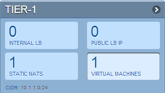
The Add Instance page is displayed.
Follow the on-screen instruction to add an instance. For information on adding an instance, see the 安装指南.
Acquiring a New IP Address for a VPC¶
When you acquire an IP address, all IP addresses are allocated to VPC, not to the guest networks within the VPC. The IPs are associated to the guest network only when the first port-forwarding, load balancing, or Static NAT rule is created for the IP or the network. IP can’t be associated to more than one network at a time.
Log in to the CloudStack UI as an administrator or end user.
In the left navigation, choose Network.
In the Select view, select VPC.
All the VPCs that you have created for the account is listed in the page.
Click the Configure button of the VPC to which you want to deploy the VMs.
The VPC page is displayed where all the tiers you created are listed in a diagram.
The following options are displayed.
- Internal LB
- Public LB IP
- Static NAT
- Virtual Machines
- CIDR
The following router information is displayed:
- Private Gateways
- Public IP Addresses
- Site-to-Site VPNs
- Network ACL Lists
Select IP Addresses.
The Public IP Addresses page is displayed.
Click Acquire New IP, and click Yes in the confirmation dialog.
You are prompted for confirmation because, typically, IP addresses are a limited resource. Within a few moments, the new IP address should appear with the state Allocated. You can now use the IP address in port forwarding, load balancing, and static NAT rules.
Releasing an IP Address Alloted to a VPC¶
The IP address is a limited resource. If you no longer need a particular IP, you can disassociate it from its VPC and return it to the pool of available addresses. An IP address can be released from its tier, only when all the networking ( port forwarding, load balancing, or StaticNAT ) rules are removed for this IP address. The released IP address will still belongs to the same VPC.
Log in to the CloudStack UI as an administrator or end user.
In the left navigation, choose Network.
In the Select view, select VPC.
All the VPCs that you have created for the account is listed in the page.
Click the Configure button of the VPC whose IP you want to release.
The VPC page is displayed where all the tiers you created are listed in a diagram.
The following options are displayed.
- Internal LB
- Public LB IP
- Static NAT
- Virtual Machines
- CIDR
The following router information is displayed:
- Private Gateways
- Public IP Addresses
- Site-to-Site VPNs
- Network ACL Lists
Select Public IP Addresses.
The IP Addresses page is displayed.
Click the IP you want to release.
In the Details tab, click the Release IP button
Enabling or Disabling Static NAT on a VPC¶
A static NAT rule maps a public IP address to the private IP address of a VM in a VPC to allow Internet traffic to it. This section tells how to enable or disable static NAT for a particular IP address in a VPC.
If port forwarding rules are already in effect for an IP address, you cannot enable static NAT to that IP.
If a guest VM is part of more than one network, static NAT rules will function only if they are defined on the default network.
Log in to the CloudStack UI as an administrator or end user.
In the left navigation, choose Network.
In the Select view, select VPC.
All the VPCs that you have created for the account is listed in the page.
Click the Configure button of the VPC to which you want to deploy the VMs.
The VPC page is displayed where all the tiers you created are listed in a diagram.
For each tier, the following options are displayed.
- Internal LB
- Public LB IP
- Static NAT
- Virtual Machines
- CIDR
The following router information is displayed:
- Private Gateways
- Public IP Addresses
- Site-to-Site VPNs
- Network ACL Lists
In the Router node, select Public IP Addresses.
The IP Addresses page is displayed.
Click the IP you want to work with.
In the Details tab,click the Static NAT button.
The button toggles between Enable and
Disable, depending on whether static NAT is currently enabled for the
IP address.If you are enabling static NAT, a dialog appears as follows:
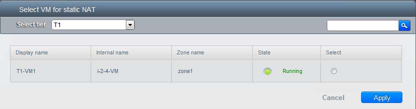
Select the tier and the destination VM, then click Apply.
Adding 负载均衡 Rules on a VPC¶
In a VPC, you can configure two types of load balancing: external LB and internal LB. External LB is nothing but a LB rule created to redirect the traffic received at a public IP of the VPC virtual router. The traffic is load balanced within a tier based on your configuration. Citrix NetScaler and VPC virtual router are supported for external LB. When you use internal LB service, traffic received at a tier is load balanced across different VMs within that tier. For example, traffic reached at Web tier is redirected to another VM in that tier. External load balancing devices are not supported for internal LB. The service is provided by a internal LB VM configured on the target tier.
负载均衡 Within a Tier (External LB)¶
A CloudStack user or administrator may create load balancing rules that balance traffic received at a public IP to one or more VMs that belong to a network tier that provides load balancing service in a VPC. A user creates a rule, specifies an algorithm, and assigns the rule to a set of VMs within a tier.
Enabling NetScaler as the LB Provider on a VPC Tier¶
Add and enable Netscaler VPX in dedicated mode.
Netscaler can be used in a VPC environment only if it is in dedicated mode.
Create a network offering, as given in “Creating a Network Offering for External LB”.
Create a VPC with Netscaler as the Public LB provider.
For more information, see “Adding a Virtual Private Cloud”.
For the VPC, acquire an IP.
Create an external load balancing rule and apply, as given in Creating an External LB Rule.
Creating a Network Offering for External LB¶
To have external LB support on VPC, create a network offering as follows:
- Log in to the CloudStack UI as a user or admin.
- From the Select Offering drop-down, choose Network Offering.
- Click Add Network Offering.
- In the dialog, make the following choices:
- Name: Any desired name for the network offering.
- Description: A short description of the offering that can be displayed to users.
- Network Rate: Allowed data transfer rate in MB per second.
- Traffic Type: The type of network traffic that will be carried on the network.
- Guest Type: Choose whether the guest network is isolated or shared.
- Persistent: Indicate whether the guest network is persistent or not. The network that you can provision without having to deploy a VM on it is termed persistent network.
- VPC: This option indicate whether the guest network is Virtual Private Cloud-enabled. A Virtual Private Cloud (VPC) is a private, isolated part of CloudStack. A VPC can have its own virtual network topology that resembles a traditional physical network. For more information on VPCs, see :ref: about-vpc.
- Specify VLAN: (Isolated guest networks only) Indicate whether a VLAN should be specified when this offering is used.
- Supported Services: Select Load Balancer. Use Netscaler or VpcVirtualRouter.
- Load Balancer Type: Select Public LB from the drop-down.
- LB Isolation: Select Dedicated if Netscaler is used as the external LB provider.
- System Offering: Choose the system service offering that you want virtual routers to use in this network.
- Conserve mode: Indicate whether to use conserve mode. In this mode, network resources are allocated only when the first virtual machine starts in the network.
- Click OK and the network offering is created.
Creating an External LB Rule¶
Log in to the CloudStack UI as an administrator or end user.
In the left navigation, choose Network.
In the Select view, select VPC.
All the VPCs that you have created for the account is listed in the page.
Click the Configure button of the VPC, for which you want to configure load balancing rules.
The VPC page is displayed where all the tiers you created listed in a diagram.
For each tier, the following options are displayed:
- Internal LB
- Public LB IP
- Static NAT
- Virtual Machines
- CIDR
The following router information is displayed:
- Private Gateways
- Public IP Addresses
- Site-to-Site VPNs
- Network ACL Lists
In the Router node, select Public IP Addresses.
The IP Addresses page is displayed.
Click the IP address for which you want to create the rule, then click the Configuration tab.
In the 负载均衡 node of the diagram, click View All.
Select the tier to which you want to apply the rule.
Specify the following:
- Name: A name for the load balancer rule.
- Public Port: The port that receives the incoming traffic to be balanced.
- Private Port: The port that the VMs will use to receive the traffic.
- Algorithm. Choose the load balancing algorithm you want
CloudStack to use. CloudStack supports the following well-known
algorithms:
- Round-robin
- Least connections
- Source
- Stickiness. (Optional) Click Configure and choose the algorithm for the stickiness policy. See Sticky Session Policies for Load Balancer Rules.
- Add VMs: Click Add VMs, then select two or more VMs that will divide the load of incoming traffic, and click Apply.
The new load balancing rule appears in the list. You can repeat these steps to add more load balancing rules for this IP address.
负载均衡 Across Tiers¶
CloudStack supports sharing workload across different tiers within your VPC. Assume that multiple tiers are set up in your environment, such as Web tier and Application tier. Traffic to each tier is balanced on the VPC virtual router on the public side, as explained in “Adding 负载均衡 Rules on a VPC”. If you want the traffic coming from the Web tier to the Application tier to be balanced, use the internal load balancing feature offered by CloudStack.
How Does Internal LB Work in VPC?¶
In this figure, a public LB rule is created for the public IP 72.52.125.10 with public port 80 and private port 81. The LB rule, created on the VPC virtual router, is applied on the traffic coming from the Internet to the VMs on the Web tier. On the Application tier two internal load balancing rules are created. An internal LB rule for the guest IP 10.10.10.4 with load balancer port 23 and instance port 25 is configured on the VM, InternalLBVM1. Another internal LB rule for the guest IP 10.10.10.4 with load balancer port 45 and instance port 46 is configured on the VM, InternalLBVM1. Another internal LB rule for the guest IP 10.10.10.6, with load balancer port 23 and instance port 25 is configured on the VM, InternalLBVM2.
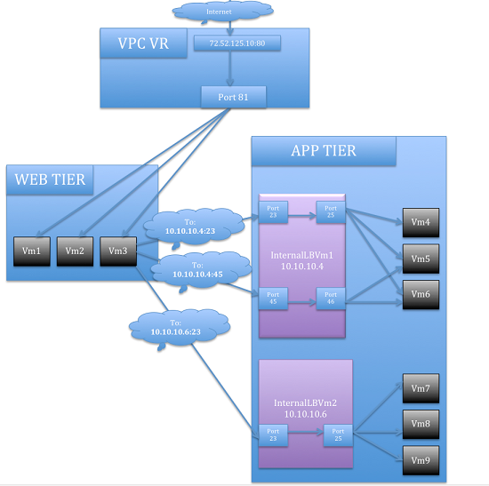
Guidelines¶
- Internal LB and Public LB are mutually exclusive on a tier. If the tier has LB on the public side, then it can’t have the Internal LB.
- Internal LB is supported just on VPC networks in CloudStack 4.2 release.
- Only Internal LB VM can act as the Internal LB provider in CloudStack 4.2 release.
- Network upgrade is not supported from the network offering with Internal LB to the network offering with Public LB.
- Multiple tiers can have internal LB support in a VPC.
- Only one tier can have Public LB support in a VPC.
Enabling Internal LB on a VPC Tier¶
- Create a network offering, as given in Creating a Network Offering for Internal LB.
- Create an internal load balancing rule and apply, as given in Creating an Internal LB Rule.
Creating a Network Offering for Internal LB¶
To have internal LB support on VPC, either use the default offering, DefaultIsolatedNetworkOfferingForVpcNetworksWithInternalLB, or create a network offering as follows:
- Log in to the CloudStack UI as a user or admin.
- From the Select Offering drop-down, choose Network Offering.
- Click Add Network Offering.
- In the dialog, make the following choices:
- Name: Any desired name for the network offering.
- Description: A short description of the offering that can be displayed to users.
- Network Rate: Allowed data transfer rate in MB per second.
- Traffic Type: The type of network traffic that will be carried on the network.
- Guest Type: Choose whether the guest network is isolated or shared.
- Persistent: Indicate whether the guest network is persistent or not. The network that you can provision without having to deploy a VM on it is termed persistent network.
- VPC: This option indicate whether the guest network is Virtual Private Cloud-enabled. A Virtual Private Cloud (VPC) is a private, isolated part of CloudStack. A VPC can have its own virtual network topology that resembles a traditional physical network. For more information on VPCs, see “About Virtual Private Clouds”.
- Specify VLAN: (Isolated guest networks only) Indicate whether a VLAN should be specified when this offering is used.
- Supported Services: Select Load Balancer. Select
InternalLbVMfrom the provider list. - Load Balancer Type: Select Internal LB from the drop-down.
- System Offering: Choose the system service offering that you want virtual routers to use in this network.
- Conserve mode: Indicate whether to use conserve mode. In this mode, network resources are allocated only when the first virtual machine starts in the network.
- Click OK and the network offering is created.
Creating an Internal LB Rule¶
When you create the Internal LB rule and applies to a VM, an Internal LB VM, which is responsible for load balancing, is created.
You can view the created Internal LB VM in the Instances page if you navigate to Infrastructure > Zones > <zone_ name> > <physical_network_name> > Network Service Providers > Internal LB VM. You can manage the Internal LB VMs as and when required from the location.
Log in to the CloudStack UI as an administrator or end user.
In the left navigation, choose Network.
In the Select view, select VPC.
All the VPCs that you have created for the account is listed in the page.
Locate the VPC for which you want to configure internal LB, then click Configure.
The VPC page is displayed where all the tiers you created listed in a diagram.
Locate the Tier for which you want to configure an internal LB rule, click Internal LB.
In the Internal LB page, click Add Internal LB.
In the dialog, specify the following:
Name: A name for the load balancer rule.
Description: A short description of the rule that can be displayed to users.
Source IP Address: (Optional) The source IP from which traffic originates. The IP is acquired from the CIDR of that particular tier on which you want to create the Internal LB rule. If not specified, the IP address is automatically allocated from the network CIDR.
For every Source IP, a new Internal LB VM is created for load balancing.
Source Port: The port associated with the source IP. Traffic on this port is load balanced.
Instance Port: The port of the internal LB VM.
Algorithm. Choose the load balancing algorithm you want CloudStack to use. CloudStack supports the following well-known algorithms:
- Round-robin
- Least connections
- Source
Adding a Port Forwarding Rule on a VPC¶
Log in to the CloudStack UI as an administrator or end user.
In the left navigation, choose Network.
In the Select view, select VPC.
All the VPCs that you have created for the account is listed in the page.
Click the Configure button of the VPC to which you want to deploy the VMs.
The VPC page is displayed where all the tiers you created are listed in a diagram.
For each tier, the following options are displayed:
- Internal LB
- Public LB IP
- Static NAT
- Virtual Machines
- CIDR
The following router information is displayed:
- Private Gateways
- Public IP Addresses
- Site-to-Site VPNs
- Network ACL Lists
In the Router node, select Public IP Addresses.
The IP Addresses page is displayed.
Click the IP address for which you want to create the rule, then click the Configuration tab.
In the Port Forwarding node of the diagram, click View All.
Select the tier to which you want to apply the rule.
Specify the following:
Public Port: The port to which public traffic will be addressed on the IP address you acquired in the previous step.
Private Port: The port on which the instance is listening for forwarded public traffic.
Protocol: The communication protocol in use between the two ports.
- TCP
- UDP
Add VM: Click Add VM. Select the name of the instance to which this rule applies, and click Apply.
You can test the rule by opening an SSH session to the instance.
Removing Tiers¶
You can remove a tier from a VPC. A removed tier cannot be revoked. When a tier is removed, only the resources of the tier are expunged. All the network rules (port forwarding, load balancing and staticNAT) and the IP addresses associated to the tier are removed. The IP address still be belonging to the same VPC.
Log in to the CloudStack UI as an administrator or end user.
In the left navigation, choose Network.
In the Select view, select VPC.
All the VPC that you have created for the account is listed in the page.
Click the Configure button of the VPC for which you want to set up tiers.
The Configure VPC page is displayed. Locate the tier you want to work with.
Select the tier you want to remove.
In the Network Details tab, click the Delete Network button.
Click Yes to confirm. Wait for some time for the tier to be removed.
Editing, Restarting, and Removing a Virtual Private Cloud¶
Note
Ensure that all the tiers are removed before you remove a VPC.
Log in to the CloudStack UI as an administrator or end user.
In the left navigation, choose Network.
In the Select view, select VPC.
All the VPCs that you have created for the account is listed in the page.
Select the VPC you want to work with.
In the Details tab, click the Remove VPC button

You can remove the VPC by also using the remove button in the Quick View.
You can edit the name and description of a VPC. To do that, select the VPC, then click the Edit button.
To restart a VPC, select the VPC, then click the Restart button.

Persistent Networks¶
The network that you can provision without having to deploy any VMs on it is called a persistent network. A persistent network can be part of a VPC or a non-VPC environment.
When you create other types of network, a network is only a database entry until the first VM is created on that network. When the first VM is created, a VLAN ID is assigned and the network is provisioned. Also, when the last VM is destroyed, the VLAN ID is released and the network is no longer available. With the addition of persistent network, you will have the ability to create a network in CloudStack in which physical devices can be deployed without having to run any VMs. Additionally, you can deploy physical devices on that network.
One of the advantages of having a persistent network is that you can create a VPC with a tier consisting of only physical devices. For example, you might create a VPC for a three-tier application, deploy VMs for Web and Application tier, and use physical machines for the Database tier. Another use case is that if you are providing services by using physical hardware, you can define the network as persistent and therefore even if all its VMs are destroyed the services will not be discontinued.
Persistent Network Considerations¶
- Persistent network is designed for isolated networks.
- All default network offerings are non-persistent.
- A network offering cannot be editable because changing it affects the behavior of the existing networks that were created using this network offering.
- When you create a guest network, the network offering that you select defines the network persistence. This in turn depends on whether persistent network is enabled in the selected network offering.
- An existing network can be made persistent by changing its network offering to an offering that has the Persistent option enabled. While setting this property, even if the network has no running VMs, the network is provisioned.
- An existing network can be made non-persistent by changing its network offering to an offering that has the Persistent option disabled. If the network has no running VMs, during the next network garbage collection run the network is shut down.
- When the last VM on a network is destroyed, the network garbage collector checks if the network offering associated with the network is persistent, and shuts down the network only if it is non-persistent.
Creating a Persistent Guest Network¶
To create a persistent network, perform the following:
Create a network offering with the Persistent option enabled.
Select Network from the left navigation pane.
Select the guest network that you want to offer this network service to.
Click the Edit button.
From the Network Offering drop-down, select the persistent network offering you have just created.
Click OK.
Setup a Palo Alto Networks Firewall¶
Functionality Provided¶
This implementation enables the orchestration of a Palo Alto Networks Firewall from within CloudStack UI and API.
The following features are supported:
- List/Add/Delete Palo Alto Networks service provider
- List/Add/Delete Palo Alto Networks network service offering
- List/Add/Delete Palo Alto Networks network using the above service offering
- Add an instance to a Palo Alto Networks network
- Source NAT management on network create and delete
- List/Add/Delete Ingress Firewall rule
- List/Add/Delete Egress Firewall rule (both ‘Allow’ and ‘Deny’ default rules supported)
- List/Add/Delete Port Forwarding rule
- List/Add/Delete Static NAT rule
- Apply a Threat Profile to all firewall rules (more details in the Additional Features section)
- Apply a Log Forwarding profile to all firewall rules (more details in the Additional Features section)
Initial Palo Alto Networks Firewall Configuration¶
Anatomy of the Palo Alto Networks Firewall¶
- In ‘Network > Interfaces’ there is a list of physical interfaces as well as aggregated physical interfaces which are used for managing traffic in and out of the Palo Alto Networks Firewall device.
- In ‘Network > Zones’ there is a list of the different configuration zones. This implementation will use two zones; a public (defaults to ‘untrust’) and private (defaults to ‘trust’) zone.
- In ‘Network > 虚拟路由器s’ there is a list of VRs which handle traffic routing for the Palo Alto Firewall. We only use a single Virtual Router on the firewall and it is used to handle all the routing to the next network hop.
- In ‘Objects > 安全 Profile Groups’ there is a list of profiles which can be applied to firewall rules. These profiles are used to better understand the types of traffic that is flowing through your network. Configured when you add the firewall provider to CloudStack.
- In ‘Objects > Log Forwarding’ there is a list of profiles which can be applied to firewall rules. These profiles are used to better track the logs generated by the firewall. Configured when you add the firewall provider to CloudStack.
- In ‘Policies > 安全’ there is a list of firewall rules that are currently configured. You will not need to modify this section because it will be completely automated by CloudStack, but you can review the firewall rules which have been created here.
- In ‘Policies > NAT’ there is a list of the different NAT rules. You will not need to modify this section because it will be completely automated by CloudStack, but you can review the different NAT rules that have been created here. Source NAT, Static NAT and Destination NAT (Port Forwarding) rules will show up in this list.
Configure the Public / Private Zones on the firewall¶
No manual configuration is required to setup these zones because CloudStack will configure them automatically when you add the Palo Alto Networks firewall device to CloudStack as a service provider. This implementation depends on two zones, one for the public side and one for the private side of the firewall.
- The public zone (defaults to ‘untrust’) will contain all of the public interfaces and public IPs.
- The private zone (defaults to ‘trust’) will contain all of the private interfaces and guest network gateways.
The NAT and firewall rules will be configured between these zones.
Configure the Public / Private Interfaces on the firewall¶
This implementation supports standard physical interfaces as well as grouped physical interfaces called aggregated interfaces. Both standard interfaces and aggregated interfaces are treated the same, so they can be used interchangeably. For this document, we will assume that we are using ‘ethernet1/1’ as the public interface and ‘ethernet1/2’ as the private interface. If aggregated interfaces where used, you would use something like ‘ae1’ and ‘ae2’ as the interfaces.
This implementation requires that the ‘Interface Type’ be set to ‘Layer3’ for both the public and private interfaces. If you want to be able to use the ‘Untagged’ VLAN tag for public traffic in CloudStack, you will need to enable support for it in the public ‘ethernet1/1’ interface (details below).
Steps to configure the Public Interface:
- Log into Palo Alto Networks Firewall
- Navigate to ‘Network > Interfaces’
- Click on ‘ethernet1/1’ (for aggregated ethernet, it will probably be called ‘ae1’)
- Select ‘Layer3’ from the ‘Interface Type’ list
- Click ‘Advanced’
- Check the ‘Untagged Subinterface’ check-box
- Click ‘OK’
Steps to configure the Private Interface:
- Click on ‘ethernet1/2’ (for aggregated ethernet, it will probably be called ‘ae2’)
- Select ‘Layer3’ from the ‘Interface Type’ list
- Click ‘OK’
Configure a 虚拟路由器 on the firewall¶
The 虚拟路由器 on the Palo Alto Networks Firewall is not to be confused with the 虚拟路由器s that CloudStack provisions. For this implementation, the 虚拟路由器 on the Palo Alto Networks Firewall will ONLY handle the upstream routing from the Firewall to the next hop.
Steps to configure the 虚拟路由器:
- Log into Palo Alto Networks Firewall
- Navigate to ‘Network > 虚拟路由器s’
- Select the ‘default’ 虚拟路由器 or Add a new 虚拟路由器 if there
are none in the list
- If you added a new 虚拟路由器, you will need to give it a ‘Name’
- Navigate to ‘Static Routes > IPv4’
- ‘Add’ a new static route
- Name: next_hop (you can name it anything you want)
- Destination: 0.0.0.0/0 (send all traffic to this route)
- Interface: ethernet1/1 (or whatever you set your public interface as)
- Next Hop: (specify the gateway IP for the next hop in your network)
- Click ‘OK’
- Click ‘OK’
Configure the default Public Subinterface¶
The current implementation of the Palo Alto Networks firewall integration uses CIDRs in the form of ‘w.x.y.z/32’ for the public IP addresses that CloudStack provisions. Because no broadcast or gateway IPs are in this single IP range, there is no way for the firewall to route the traffic for these IPs. To route the traffic for these IPs, we create a single subinterface on the public interface with an IP and a CIDR which encapsulates the CloudStack public IP range. This IP will need to be inside the subnet defined by the CloudStack public range netmask, but outside the CloudStack public IP range. The CIDR should reflect the same subnet defined by the CloudStack public range netmask. The name of the subinterface is determined by the VLAN configured for the public range in CloudStack.
To clarify this concept, we will use the following example.
Example CloudStack Public Range Configuration:
- Gateway: 172.30.0.1
- Netmask: 255.255.255.0
- IP Range: 172.30.0.100 - 172.30.0.199
- VLAN: Untagged
Configure the Public Subinterface:
- Log into Palo Alto Networks Firewall
- Navigate to ‘Network > Interfaces’
- Select the ‘ethernet1/1’ line (not clicking on the name)
- Click ‘Add Subinterface’ at the bottom of the window
- Enter ‘Interface Name’: ‘ethernet1/1’ . ‘9999’
- 9999 is used if the CloudStack public range VLAN is ‘Untagged’
- If the CloudStack public range VLAN is tagged (eg: 333), then the name will reflect that tag
- The ‘Tag’ is the VLAN tag that the traffic is sent to the next hop with, so set it accordingly. If you are passing ‘Untagged’ traffic from CloudStack to your next hop, leave it blank. If you want to pass tagged traffic from CloudStack, specify the tag.
- Select ‘default’ from the ‘Config > 虚拟路由器’ drop-down (assuming that is what your virtual router is called)
- Click the ‘IPv4’ tab
- Select ‘Static’ from the ‘Type’ radio options
- Click ‘Add’ in the ‘IP’ section
- Enter ‘172.30.0.254/24’ in the new line
- The IP can be any IP outside the CloudStack public IP range, but inside the CloudStack public range netmask (it can NOT be the gateway IP)
- The subnet defined by the CIDR should match the CloudStack public range netmask
- Click ‘OK’
Commit configuration on the Palo Alto Networks Firewall¶
In order for all the changes we just made to take effect, we need to commit the changes.
- Click the ‘Commit’ link in the top right corner of the window
- Click ‘OK’ in the commit window overlay
- Click ‘Close’ to the resulting commit status window after the commit finishes
Setup the Palo Alto Networks Firewall in CloudStack¶
Add the Palo Alto Networks Firewall as a Service Provider¶
- Navigate to ‘Infrastructure > Zones > ZONE_NAME > Physical Network > NETWORK_NAME (guest) > Configure; Network Service Providers’
- Click on ‘Palo Alto’ in the list
- Click ‘View Devices’
- Click ‘Add Palo Alto Device’
- Enter your configuration in the overlay. This example will reflect the
details previously used in this guide.
- IP Address: (the IP of the Palo Alto Networks Firewall)
- Username: (the admin username for the firewall)
- Password: (the admin password for the firewall)
- Type: Palo Alto Firewall
- Public Interface: ethernet1/1 (use what you setup earlier as the public interface if it is different from my examples)
- Private Interface: ethernet1/2 (use what you setup earlier as the private interface if it is different from my examples)
- Number of Retries: 2 (the default is fine)
- Timeout: 300 (the default is fine)
- Public Network: untrust (this is the public zone on the firewall and did not need to be configured)
- Private Network: trust (this is the private zone on the firewall and did not need to be configured)
- 虚拟路由器: default (this is the name of the 虚拟路由器 we setup on the firewall)
- Palo Alto Threat Profile: (not required. name of the ‘安全 Profile Groups’ to apply. more details in the ‘Additional Features’ section)
- Palo Alto Log Profile: (not required. name of the ‘Log Forwarding’ profile to apply. more details in the ‘Additional Features’ section)
- Capacity: (not required)
- Dedicated: (not required)
- Click ‘OK’
- Click on ‘Palo Alto’ in the breadcrumbs to go back one screen.
- Click on ‘Enable Provider’
Add a Network Service Offering to use the new Provider¶
There are 6 ‘Supported Services’ that need to be configured in the network service offering for this functionality. They are DHCP, DNS, Firewall, Source NAT, Static NAT and Port Forwarding. For the other settings, there are probably additional configurations which will work, but I will just document a common case.
- Navigate to ‘计算方案’
- In the drop-down at the top, select ‘Network Offerings’
- Click ‘Add Network Offering’
- Name: (name it whatever you want)
- Description: (again, can be whatever you want)
- Guest Type: Isolated
- Supported Services:
- DHCP: Provided by ‘VirtualRouter’
- DNS: Provided by ‘VirtualRouter’
- Firewall: Provided by ‘PaloAlto’
- Source NAT: Provided by ‘PaloAlto’
- Static NAT: Provided by ‘PaloAlto’
- Port Forwarding: Provided by ‘PaloAlto’
- System Offering for Router: System Offering For Software Router
- Supported Source NAT Type: Per account (this is the only supported option)
- Default egress policy: (both ‘Allow’ and ‘Deny’ are supported)
- Click ‘OK’
- Click on the newly created service offering
- Click ‘Enable network offering’
When adding networks in CloudStack, select this network offering to use the Palo Alto Networks firewall.
Additional Features¶
In addition to the standard functionality exposed by CloudStack, we have added a couple additional features to this implementation. We did not add any new screens to CloudStack, but we have added a couple fields to the ‘Add Palo Alto Service Provider’ screen which will add functionality globally for the device.
Palo Alto Networks Threat Profile¶
This feature allows you to specify a ‘安全 Profile Group’ to be applied to all of the firewall rules which are created on the Palo Alto Networks firewall device.
To create a ‘安全 Profile Group’ on the Palo Alto Networks firewall, do the following:
- Log into the Palo Alto Networks firewall
- Navigate to ‘Objects > 安全 Profile Groups’
- Click ‘Add’ at the bottom of the page to add a new group
- Give the group a Name and specify the profiles you would like to include in the group
- Click ‘OK’
- Click the ‘Commit’ link in the top right of the screen and follow the on screen instructions
Once you have created a profile, you can reference it by Name in the ‘Palo Alto Threat Profile’ field in the ‘Add the Palo Alto Networks Firewall as a Service Provider’ step.
Palo Alto Networks Log Forwarding Profile¶
This feature allows you to specify a ‘Log Forwarding’ profile to better manage where the firewall logs are sent to. This is helpful for keeping track of issues that can arise on the firewall.
To create a ‘Log Forwarding’ profile on the Palo Alto Networks Firewall, do the following:
- Log into the Palo Alto Networks firewall
- Navigate to ‘Objects > Log Forwarding’
- Click ‘Add’ at the bottom of the page to add a new profile
- Give the profile a Name and specify the details you want for the traffic and threat settings
- Click ‘OK’
- Click the ‘Commit’ link in the top right of the screen and follow the on screen instructions
Once you have created a profile, you can reference it by Name in the ‘Palo Alto Log Profile’ field in the ‘Add the Palo Alto Networks Firewall as a Service Provider’ step.
Limitations¶
- The implementation currently only supports a single public IP range in CloudStack
- Usage tracking is not yet implemented